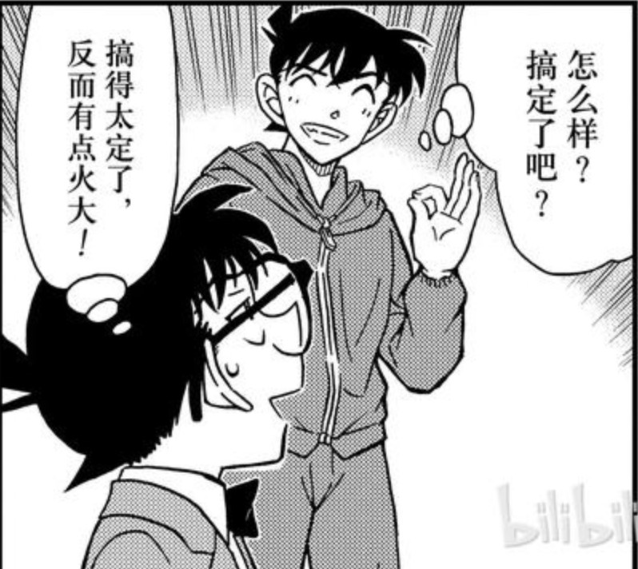

看完M26后我一瞬间感到恍惚，尽管早因为好奇主动“被”剧透了无数遍，但是正式看完全片后受到的触动却是完完全全超乎此前设想的。我不想用“震撼”“感动”等纯粹表达主观情感的字眼来形容，应该是“颠覆”吧，硬要形容的话，无论是在人物关系、剧情展示，还是节奏表现上，都与此前任意一部剧场版形成了明显的代差。这种显著差异，使我在观影的过程中无数次地忍不住设想，73这么做的用意到底是为了什么？有关剧情的讨论已经足够多了，我在这里想以M26所展现出的差异性为切入口，探讨一下本作之于全篇的意义。【此前在刚出现剧透时，浅浅分析过一回M26之于全篇的意义，故本文算作2吧】
一、非CP向的观感解读
M26我看了两遍，一遍是线上尝鲜版，一遍是影院版。看尝鲜版主要是奔着那些已经剧透的著名桥段去的，观感除了大为惊叹外，最主要的想法和网上很多人的观点一致，就是“为了一碟醋而包的饺子”吧。但是第二遍去影院后，我的这个初印象被彻底推翻了！M26揭示的内容比我预想的要多得多，甚至在我初印象里觉得略有生硬的情节发展，也完全不复存在了！音效真得太重要了！！！一定要去影院！一定要去影院！一定要去影院！重要的事情说三遍。
一旦推翻了“为了醋而包饺子”的初印象，我的视野瞬间打开。我发现，M26给自身的定位绝不只是“为了让柯哀明朗化”那么简单，它的野心足够大，其表现足以使自己彻底摆脱剧场版“附属”主剧情的地位，而成为了着力表现主剧情的史诗级一幕。之所以要强调这一点，是因为按照惯例，剧场版通常都有是/否纳入主剧情的讨论的。尽管自M20后，剧场版与主剧情的衔接渐成气候，但其相对独立性始终存在，或者说虽然剧场版涉及的元素为主剧情接纳，但是将剧场版与主剧情剥离，也并不会对二者有任何实质性的影响。（即使如库拉索和红叶的登场，或者赤楼梦一家的亮相，甚至于向日葵和绿帽戏水，所展现的都仅是一个元素，是个在漫画里也能一笔带过甚至早已为人知的元素）。但是M26却绝非如此，它就像73在连载中着力刻画的一个庞大系列，一个宏大篇章，其作用恰如“伦敦篇”和“红修篇”那样，我愿称之为“鱼影篇”。
M26我看了两遍，一遍是线上尝鲜版，一遍是影院版。看尝鲜版主要是奔着那些已经剧透的著名桥段去的，观感除了大为惊叹外，最主要的想法和网上很多人的观点一致，就是“为了一碟醋而包的饺子”吧。但是第二遍去影院后，我的这个初印象被彻底推翻了！M26揭示的内容比我预想的要多得多，甚至在我初印象里觉得略有生硬的情节发展，也完全不复存在了！音效真得太重要了！！！一定要去影院！一定要去影院！一定要去影院！重要的事情说三遍。
一旦推翻了“为了醋而包饺子”的初印象，我的视野瞬间打开。我发现，M26给自身的定位绝不只是“为了让柯哀明朗化”那么简单，它的野心足够大，其表现足以使自己彻底摆脱剧场版“附属”主剧情的地位，而成为了着力表现主剧情的史诗级一幕。之所以要强调这一点，是因为按照惯例，剧场版通常都有是/否纳入主剧情的讨论的。尽管自M20后，剧场版与主剧情的衔接渐成气候，但其相对独立性始终存在，或者说虽然剧场版涉及的元素为主剧情接纳，但是将剧场版与主剧情剥离，也并不会对二者有任何实质性的影响。（即使如库拉索和红叶的登场，或者赤楼梦一家的亮相，甚至于向日葵和绿帽戏水，所展现的都仅是一个元素，是个在漫画里也能一笔带过甚至早已为人知的元素）。但是M26却绝非如此，它就像73在连载中着力刻画的一个庞大系列，一个宏大篇章，其作用恰如“伦敦篇”和“红修篇”那样，我愿称之为“鱼影篇”。
2023-12-22 20:03 | waighty:正解，鱼影篇2023-12-23 10:13 | 梦紫冰蝶:有同样的感觉！与之前那种吸纳了剧场版某个设定和原创人物时的感觉不同，m26更像是目前漫画后期的重要系列篇章，现在回头看m26时间线后的漫画章节，忽然发现m26的剧情几乎可以完美地融入进去2023-12-24 05:45 | 九九玉生烟:回复 梦紫冰蝶 :我看到有立川采访是应证了这个观点的。但我觉得m26只是开端，今后应该都是走这个模式(大概)2024-02-21 20:01 | 白化の黑化雪:回复 九九玉生烟 :把剧场版剧情完整纳入正史，并且会影响漫画的走向那种
（一）人物关系的全面更新
【关键词：新】
“鱼影篇”最大的特色之一，莫过于人物关系的全面更新，除主角三人外（后面会单独论述），其他人物的关系也出现了大面积的前所未有的变化，包括：
1. 园哀：园子首次对哀印象改观，从认为她高冷到善解人意，甚至滋生了欢喜之意；
2. 贝哀：尽管贝姐早在列车篇就放弃了对哀的杀意，但二人此后并未正面接触，而在本篇，二人的关系得到了前所未有的突破，不但哀完全感受不到杀意，甚至在不知情的情况下给予了贝姐善意，当然贝姐也在哀不知情的情况下同样给予了她帮助，可以算作历史性的跨越；
3. 直哀：作为哀孩童时期的直接见证者，直美的作用与其说是人物关系的更新，不如说是对哀个人魅力的进一步彰显，实际上，园哀和贝哀的塑造也都有这个目的。这三者加在一起，共同体现出了哀尊老爱幼、谦让耿直、勇敢清高的特质，可以说是将“高岭之花”诠释得淋漓尽致。
4. 黑组：本篇将主要黑组成员间的关系进行了抽丝剥茧地处理，第一次展现出了伏特加对基尔的“善意”，琴酒与朗姆的隔阂，朗姆对BOSS的猜疑，以及组织内部的等级架构。藉由这些人之间的联系可以看出，朗姆虽然贵为二把手，但其实真正的亲信只有库拉索和宾加，还有波本表面也是他的人；而琴酒自成一派，亲信除了伏特加外，和他同车的科恩应该也是（同时包括凤雏基安蒂），基尔虽然一再和他对抗，但是看伏特加对她的态度，应该也算琴酒这派；贝姐和BOSS单线联系，也可能是唯一知晓BOSS秘密的人，所以只有她能够轻易窥测到BOSS的想法并加以利用。至此，黑组已出场主要成员的关系基本明晰，也是首次公开。
5. 其他关系的强化：本篇着重强化了博士哀的亲情，赤柯、安柯的信任，赤安的对立与信任，黑田柯的信任，这些关系的突出强化让红方的脉络更加清晰，也将柯南作为主角众星拱月的地位进一步升级。值得注意的是，这其中毛利小五郎与柯的关系不升反降，且其自身的定位被进一步边缘化，这点将与后面CP向连在一起解读。 【这张酒图大有深意】
【关键词：新】
“鱼影篇”最大的特色之一，莫过于人物关系的全面更新，除主角三人外（后面会单独论述），其他人物的关系也出现了大面积的前所未有的变化，包括：
1. 园哀：园子首次对哀印象改观，从认为她高冷到善解人意，甚至滋生了欢喜之意；
2. 贝哀：尽管贝姐早在列车篇就放弃了对哀的杀意，但二人此后并未正面接触，而在本篇，二人的关系得到了前所未有的突破，不但哀完全感受不到杀意，甚至在不知情的情况下给予了贝姐善意，当然贝姐也在哀不知情的情况下同样给予了她帮助，可以算作历史性的跨越；
3. 直哀：作为哀孩童时期的直接见证者，直美的作用与其说是人物关系的更新，不如说是对哀个人魅力的进一步彰显，实际上，园哀和贝哀的塑造也都有这个目的。这三者加在一起，共同体现出了哀尊老爱幼、谦让耿直、勇敢清高的特质，可以说是将“高岭之花”诠释得淋漓尽致。
4. 黑组：本篇将主要黑组成员间的关系进行了抽丝剥茧地处理，第一次展现出了伏特加对基尔的“善意”，琴酒与朗姆的隔阂，朗姆对BOSS的猜疑，以及组织内部的等级架构。藉由这些人之间的联系可以看出，朗姆虽然贵为二把手，但其实真正的亲信只有库拉索和宾加，还有波本表面也是他的人；而琴酒自成一派，亲信除了伏特加外，和他同车的科恩应该也是（同时包括凤雏基安蒂），基尔虽然一再和他对抗，但是看伏特加对她的态度，应该也算琴酒这派；贝姐和BOSS单线联系，也可能是唯一知晓BOSS秘密的人，所以只有她能够轻易窥测到BOSS的想法并加以利用。至此，黑组已出场主要成员的关系基本明晰，也是首次公开。
5. 其他关系的强化：本篇着重强化了博士哀的亲情，赤柯、安柯的信任，赤安的对立与信任，黑田柯的信任，这些关系的突出强化让红方的脉络更加清晰，也将柯南作为主角众星拱月的地位进一步升级。值得注意的是，这其中毛利小五郎与柯的关系不升反降，且其自身的定位被进一步边缘化，这点将与后面CP向连在一起解读。 【这张酒图大有深意】
（一）剧情呈现的多面开花
【关键词：定位】
本篇的内容相当密集。除了围绕着老若系统展开的直美、哀和柯之间的救赎与被救赎外，关于国际刑jing组织（优作最早的人脉就在此处）、FBI、黑组的能量与组织架构、BOSS的秘密等也都一一呈现，尤其是哀的过去（留学时、与明美一起时、逃离组织时）相关细节更是首度揭开。这种大幅度的展开某种程度上对于云粉或者路人而言是相当不友好的，这也是为什么电影首映后很多人反映信息量过于密集有点跟不上的原因。但从另一个角度，恰恰应证了前述的推测，即本作的定位绝不仅仅是一部“稍有突破”的剧场版，而是主剧情连载至今的一次全方位立体式的对重要情节的集中整合与高度呈现，同时也为今后剧场版作为名柯剧情关键枢纽的定位打下基础。
【关键词：定位】
本篇的内容相当密集。除了围绕着老若系统展开的直美、哀和柯之间的救赎与被救赎外，关于国际刑jing组织（优作最早的人脉就在此处）、FBI、黑组的能量与组织架构、BOSS的秘密等也都一一呈现，尤其是哀的过去（留学时、与明美一起时、逃离组织时）相关细节更是首度揭开。这种大幅度的展开某种程度上对于云粉或者路人而言是相当不友好的，这也是为什么电影首映后很多人反映信息量过于密集有点跟不上的原因。但从另一个角度，恰恰应证了前述的推测，即本作的定位绝不仅仅是一部“稍有突破”的剧场版，而是主剧情连载至今的一次全方位立体式的对重要情节的集中整合与高度呈现，同时也为今后剧场版作为名柯剧情关键枢纽的定位打下基础。
（三）节奏铺陈的连环拷问
【关键词：彩蛋】
本篇的节奏感把握得相当好，舒缓与紧张交叠展现，环环相扣，出色的音效可谓功不可没，尤其是黑组狙击直美父亲那一段，紧迫感与水无、哀的痛苦回忆交织，伴随着直美的悲愤，让观众对黑组的愤怒达到了顶点，堪称全场最佳。这也为基尔后续冒着生命危险也要顶撞琴酒做足了铺垫，逻辑性极为顺畅。除此之外，本作的推理过程虽然简单，推理性却并不弱，包括犯罪手法、作案动机、推理要点都紧扣老若系统这一主题，并且在二刷时我特别留意到，有关于犯人的疑点从最开始就不断呈现了，制作上相当细致，并不敷衍。事实上，本作的推理既不同于向日葵、唐红那种令人啼笑皆非的弱推理，也不同于万圣节意图重新将推理作为中心的强推理，而是找到了一个非常舒适的度——这个度就是将传统案件的推理难度保留在简易和趣味性兼有的当口，从而留下适度空间为更大的推理而服务。而本作更大的推理就保留在了彩蛋中，也就是贝姐最后的那句话：“我为什么要救她？寻找答案不就是你要做的工作吗，银色子弹？”
需要注意的是，名柯前25版剧场版，从来没有一次在彩蛋或结尾会抛出需要人进一步思考问题的情形，毕竟要保留剧场版的相对独立性，没有必要把问题留在片外。但是，M26却打破了这一惯例，贝姐最后的问题既是在问柯南，更是在问观众，别以为解谜游戏结束了，这才刚刚开始呢！这种前所未有的连锁拷问，让本篇的剧情顺理成章地延伸到了原作，也进一步应证了前面的猜测，“鱼影篇”不是主剧情外的特别篇，而是主剧情内的大系列！
【关键词：彩蛋】
本篇的节奏感把握得相当好，舒缓与紧张交叠展现，环环相扣，出色的音效可谓功不可没，尤其是黑组狙击直美父亲那一段，紧迫感与水无、哀的痛苦回忆交织，伴随着直美的悲愤，让观众对黑组的愤怒达到了顶点，堪称全场最佳。这也为基尔后续冒着生命危险也要顶撞琴酒做足了铺垫，逻辑性极为顺畅。除此之外，本作的推理过程虽然简单，推理性却并不弱，包括犯罪手法、作案动机、推理要点都紧扣老若系统这一主题，并且在二刷时我特别留意到，有关于犯人的疑点从最开始就不断呈现了，制作上相当细致，并不敷衍。事实上，本作的推理既不同于向日葵、唐红那种令人啼笑皆非的弱推理，也不同于万圣节意图重新将推理作为中心的强推理，而是找到了一个非常舒适的度——这个度就是将传统案件的推理难度保留在简易和趣味性兼有的当口，从而留下适度空间为更大的推理而服务。而本作更大的推理就保留在了彩蛋中，也就是贝姐最后的那句话：“我为什么要救她？寻找答案不就是你要做的工作吗，银色子弹？”
需要注意的是，名柯前25版剧场版，从来没有一次在彩蛋或结尾会抛出需要人进一步思考问题的情形，毕竟要保留剧场版的相对独立性，没有必要把问题留在片外。但是，M26却打破了这一惯例，贝姐最后的问题既是在问柯南，更是在问观众，别以为解谜游戏结束了，这才刚刚开始呢！这种前所未有的连锁拷问，让本篇的剧情顺理成章地延伸到了原作，也进一步应证了前面的猜测，“鱼影篇”不是主剧情外的特别篇，而是主剧情内的大系列！
2024-02-21 20:07 | 白化の黑化雪:贝姐会帮雪莉除了青山给出明面的答案（芙莎绘限定饰品）以外，我觉得就是贝姐和BOSS同样也服用了A药（可能不是志保开发的版本），贝姐因为某些原因也想摧毁组织所以才寻找银色子弹，顺带利用BOSS也一样吃了A药并且想隐瞒真相的想法和自己想隐瞒银弹2人组不谋而合，才去告密BOSS然后行动摧毁老弱系统
二、CP向的观感解读
M26的另一大特色自然是主CP的转向了，也是大家最为关注的焦点。虽然是首度聚焦柯哀感情线，但本作的呈现却一改原作的虚虚实实和剧场版前作的遮遮掩掩，而是对柯哀的感情做了一次贯彻始终、大开大合、回味无穷的呈现。在具体的设计上，本作采用了经典三幕剧的形式，我将之概括为如下三段：
M26的另一大特色自然是主CP的转向了，也是大家最为关注的焦点。虽然是首度聚焦柯哀感情线，但本作的呈现却一改原作的虚虚实实和剧场版前作的遮遮掩掩，而是对柯哀的感情做了一次贯彻始终、大开大合、回味无穷的呈现。在具体的设计上，本作采用了经典三幕剧的形式，我将之概括为如下三段：
（一）他们好像有一腿？
【关键词：相互守护】
影片从一开始就在着力刻画二人间的默契。如排队领奖券，明明柯子脸朝前，却在哀转身离开队伍后立刻察觉并发问；哀看新闻柯子好奇，哀给柯戴耳机，柯直接把头凑过去；柯擅自去太平洋浮标，哀毫不意外；哀听到了柯与博士商量的全过程，柯也毫不惊讶；柯让哀赶紧离开，哀也让柯一同离开，柯沉默片刻，给哀戴上了护身符般的眼镜。这些互动，除了最后护身符的设计，其余都以十分平常的方式表现，让观众在第一时间就自然而然接受了二人的过于熟稔，以至于到了护身符桥段时，才猛然惊觉，原来两个人已经到了相互守护的程度了啊！以此作为立足点再回顾前面，就会发现背后长眼睛、戴耳机、对彼此动向的心知肚明早已渗透于柯哀间的互动，他们对彼此的过分关注、以守护为名的亲昵之举，很难让人不去好奇，这俩究竟有没有什么猫腻？
【关键词：相互守护】
影片从一开始就在着力刻画二人间的默契。如排队领奖券，明明柯子脸朝前，却在哀转身离开队伍后立刻察觉并发问；哀看新闻柯子好奇，哀给柯戴耳机，柯直接把头凑过去；柯擅自去太平洋浮标，哀毫不意外；哀听到了柯与博士商量的全过程，柯也毫不惊讶；柯让哀赶紧离开，哀也让柯一同离开，柯沉默片刻，给哀戴上了护身符般的眼镜。这些互动，除了最后护身符的设计，其余都以十分平常的方式表现，让观众在第一时间就自然而然接受了二人的过于熟稔，以至于到了护身符桥段时，才猛然惊觉，原来两个人已经到了相互守护的程度了啊！以此作为立足点再回顾前面，就会发现背后长眼睛、戴耳机、对彼此动向的心知肚明早已渗透于柯哀间的互动，他们对彼此的过分关注、以守护为名的亲昵之举，很难让人不去好奇，这俩究竟有没有什么猫腻？
2023-12-22 09:02 | 176******25725🔅:九老师好会嗑
（二）他们可能有一腿。
【关键词：Sherlocked】
不只是观众有此疑问，当事主人公亦有此疑问，因而护身符桥段后，柯哀线迎来了第二阶段。73曾在草稿中批注，说护身符桥段是唯一能明确哀喜欢柯的情节。既然作者本人发话了，那么这部分的作用不言而喻。但问题在于，不论漫画，早在M19向日葵时，73已经亲自操刀创造了“我的眼里只有你”的桥段，基本算是明示了哀对柯的情感，那么他在M26里又想达到什么效果呢，总不可能再次重复一遍这个走向吧？带着这样的疑问重新去审视护身符时就会发现，这里哀的感情泄露不再是向日葵中对柯子背影的凝视，而是对柯子亲手给她佩戴的护身符的审视。如果说向日葵里的感情是建立在虽信任但远去的若即若离中的话，那对护身符的感情就是建立在对方主动给予的守护之上，此时的情感彻底跳出了原有的“我喜欢你但与你无关”的默默欣赏状态，而进入到了隐约察觉出对方心意的爱意升华状态——I AM SHERLOCKED！ 【哀凝视备用眼镜的微笑，以及此后的反复摩挲，都体现出了内心已被令和时代的福尔摩斯所彻底俘获的状态】
【关键词：Sherlocked】
不只是观众有此疑问，当事主人公亦有此疑问，因而护身符桥段后，柯哀线迎来了第二阶段。73曾在草稿中批注，说护身符桥段是唯一能明确哀喜欢柯的情节。既然作者本人发话了，那么这部分的作用不言而喻。但问题在于，不论漫画，早在M19向日葵时，73已经亲自操刀创造了“我的眼里只有你”的桥段，基本算是明示了哀对柯的情感，那么他在M26里又想达到什么效果呢，总不可能再次重复一遍这个走向吧？带着这样的疑问重新去审视护身符时就会发现，这里哀的感情泄露不再是向日葵中对柯子背影的凝视，而是对柯子亲手给她佩戴的护身符的审视。如果说向日葵里的感情是建立在虽信任但远去的若即若离中的话，那对护身符的感情就是建立在对方主动给予的守护之上，此时的情感彻底跳出了原有的“我喜欢你但与你无关”的默默欣赏状态，而进入到了隐约察觉出对方心意的爱意升华状态——I AM SHERLOCKED！ 【哀凝视备用眼镜的微笑，以及此后的反复摩挲，都体现出了内心已被令和时代的福尔摩斯所彻底俘获的状态】
2023-12-22 11:19 | AYUnbelievable:看到了我的头像2023-12-23 06:45 | 九九玉生烟:回复 AYUnbelievable :好棒的头像2024-01-01 05:41 | 眼镜王蛇💯:对于感情不同阶段的解读非常精辟！2024-01-22 20:53 | 🍁傻敷敷的小颜:回复 九九玉生烟 :捉个虫，不是备用眼镜，是小柯的初号机2024-02-12 10:46 | 贴吧用户_G513QQ1:我的眼里只有你是单向的爱，护身符是双向的守护。就像向日葵当时没有承认哀的单箭头直到M26才承认哀喜欢柯一样，虽然M26没有承认双向箭头，以后会承认的
从主动给哀戴上追踪眼镜并冠以护身符之名开始，这一阶段在感情线上的设计重点体现在柯→哀的行动上。哀被抓后的立刻警觉，月夜下的疯狂追逐，悬崖跳海的奋不顾身，多次潜海的衣物打捞，月夜下一定要救回灰原的坚定誓言，以及后面一连串的江户川乱吼、江户川乱喊等，紧握的拳头、抓紧膝盖颤抖的双手、深锁的眉头、祈祷的姿势……明明是特意强调了哀→柯的喜欢，实际呈现的却是柯→哀的过度在意和慌乱！结合本阶段开头哀对眼镜的反复摩挲与微笑，以及本阶段结尾，哀对柯自我介绍的补充“是个侦探哟”，可以得出一个直观的结论：哀体悟出了柯对自己的在意，恰如艾琳意识到了与福尔摩斯的棋逢对手、心动刹那，哀开始决定正视自己的感情了！而作为观众的我们，也如获救的直美一般，看着眼前两个般配的小大人，内心也悄悄定下了“这俩孩子相互有意”的结论。
2023-12-22 09:04 | 176******25725🔅:福尔摩斯合体啦！！！！2024-01-01 05:42 | 眼镜王蛇💯:有一个问题，就是哀好像并不知道柯南在她被抓走后那些破防举动2024-01-01 07:28 | KaitouKuroba:回复 眼镜王蛇💯 :确实是不知道，但应该能猜出一部分吧2024-01-01 07:40 | 九九玉生烟:回复 眼镜王蛇💯 :不知道，但不影响她感受到柯对自己的紧张2024-01-01 08:25 | 眼镜王蛇💯:回复 九九玉生烟 :那确实！不过以这小两口猜也能猜出来吧～2024-01-12 10:45 | 傲娇千面控:回复 眼镜王蛇💯 :所以有没有可能是双向暗恋？两人都误判对方的感情。2024-03-24 21:31 | DEATHRUG1:回复 傲娇千面控 :哀在古堡时就明了自己的动摇，而再会篇时就已经明白了自己的心意！柯在显像馆之后也有所怀疑哀对自己的心意，但不敢确认！小黑鱼后柯依旧是根认不清真心的木头，而哀则明了双方的心意，也明白柯还搞明白他自己的想法，所以才有的还吻！2024-03-24 21:31 | DEATHRUG1:搞不明白，写漏字了2024-03-24 21:46 | DEATHRUG1:回复 DEATHRUG1 :所以个人觉得M30或之前青山肯定会搞个大的让柯(新)明白自己的心意。
（三）他们真得有一腿！
【关键词：如果有你在】
剧情的第三阶段，情感线的呈现也正式从柯→哀，进入到了哀→柯。除了那句意味深长的“真是喜欢让人等啊，新一君”之外，重点剧情集中体现在哀对柯救助上。虽然柯给潜艇定位是单方面的行动，但哀对柯的关注恰如柯对哀的关注，她几乎立刻察觉出了这场行动的风险，并果断采取了行动，以至于一向心细如发的她都没有来得及去检查鲨鱼航行器的电力。而在这场救助中，眼镜和呼吸器成为了表达二人情感的重要意向：
离开了眼镜的柯子静静地躺在海底，此时的他犹如刚被琴酒灌下药物而缩小的状态，既不是大家熟悉的新一，也不是那个眼镜超人柯南，如果就此消失的话，根本不会有人发现。而哀发现了他，凭借着那副交换的眼镜。在护身符桥段，由于柯的自作主张，他自己的眼镜成为了哀的护身符，同样哀的备用眼镜也被他当作了自己的护身符，而这枚护身符的作用在此刻体现了出来——被原主人哀所发现，并进而找到了濒临死亡的他！此后，哀用人工呼吸将柯从生死边缘拉了回来，二人的关系线则进入到柯↔哀的同步双向阶段。
【关键词：如果有你在】
剧情的第三阶段，情感线的呈现也正式从柯→哀，进入到了哀→柯。除了那句意味深长的“真是喜欢让人等啊，新一君”之外，重点剧情集中体现在哀对柯救助上。虽然柯给潜艇定位是单方面的行动，但哀对柯的关注恰如柯对哀的关注，她几乎立刻察觉出了这场行动的风险，并果断采取了行动，以至于一向心细如发的她都没有来得及去检查鲨鱼航行器的电力。而在这场救助中，眼镜和呼吸器成为了表达二人情感的重要意向：
离开了眼镜的柯子静静地躺在海底，此时的他犹如刚被琴酒灌下药物而缩小的状态，既不是大家熟悉的新一，也不是那个眼镜超人柯南，如果就此消失的话，根本不会有人发现。而哀发现了他，凭借着那副交换的眼镜。在护身符桥段，由于柯的自作主张，他自己的眼镜成为了哀的护身符，同样哀的备用眼镜也被他当作了自己的护身符，而这枚护身符的作用在此刻体现了出来——被原主人哀所发现，并进而找到了濒临死亡的他！此后，哀用人工呼吸将柯从生死边缘拉了回来，二人的关系线则进入到柯↔哀的同步双向阶段。
2023-12-23 03:41 | Holt_0:没错，我也觉得哀酱在无意识中也履行了“我一定会保护你的”的诺言2023-12-23 05:56 | 九九玉生烟:回复 Holt_0 :虽然是无意识，但设计是有意的，前后呼应了涅2023-12-23 06:19 | Holt_0:回复 九九玉生烟 :所以从这个角度上来说，柯哀的双向奔赴是无法动摇的2023-12-27 23:32 | 源天城主:他们就是有一腿₍₍◡(╹◡╹)◡₎₎2024-02-12 10:47 | 贴吧用户_G513QQ1:双向救赎就是双箭头啊，73专门没给柯的心理，只给了柯的行为，就是让我们去猜的2024-02-21 20:15 | 白化の黑化雪:回复 贴吧用户_G513QQ1 :第一次柯把哀救回来之后，哀就明确表示要离开，柯直接说。我还有王牌，和宾加做交易。这个行动已经把柯拉入了极度的灰中了。这说明了柯为了把哀留在身边愿意和罪犯做交易去妥协。2024-03-24 21:48 | DEATHRUG1:他为了她已经不是哪个纯粹的正义的工藤新一了
青山笔下的柯从来就不是非黑即白的，也从不圣母，那只是毛利兰诸多幻觉中的一个。2024-03-24 21:49 | DEATHRUG1:而毛利最大的幻觉是我了解新一！乐
这一双向连接的突出体现是牵手与呼吸器的交换。首先是关于牵手的特写，在柯子苏醒后，几乎是立刻意识到了被哀拯救和当下的处境，然后他毫不犹豫牵起了哀的手，共同向海面游动。从生死一线到牵手逃离，整个转变迅速流畅，似乎你救我我救你乃天经地义，此刻的二人是真正的命运共同体，不分彼此。另一个特写是呼吸器的交换。哀三次利用呼吸器拯救了柯，而柯苏醒后到牵手上浮的特写阶段，与哀交换呼吸器也是三次！这个过程没有任何配乐，唯有海底的静谧与呼吸导致的水流声，置身于一望无垠的深海中的两人，正是以幼童身姿对抗黑组深水的现实写照，交换的呼吸器是“彼此依赖”的铁证。在深不见底的黑暗中，他们有想过去依赖谁吗，又有谁能主动找到他们？没有其他人，除了他们彼此，同呼吸、共命运、心连心。
在明确彼此被捆绑着的命运后，剧情再度升级，一种名为牺牲和付出的情绪在二人间悄然滋生，同样，名为极限拉扯的感情叙述技巧也在极速展开。因为担忧身份暴露而连累他人的哀，对于回到“家”产生了消极情绪，并打算与柯做最后的道别；但是柯立即察觉到了她的想法，并强硬地留住了她。通常要留住一个将要转身的人，常见的做法是大声呼喊、拉住不放、堵住去路，不过这些做法都相对温和，也给被挽留者留下了一定行动空间。但柯子不是，他的行动是完全进攻性的，将哀“用力拉向”自己，再“强塞”呼吸器，几乎没有留给哀任何的选择权和行动的余地。在这一刻，二人的关系已然超出了伙伴的范畴，他将她牢牢锁在自己身边，即使此刻尚未想出任何对策，明明理论上她的离开能最大限度保全所有人，他依然不做任何其他考虑。她是他的血，他的肉，他的灵魂孤岛唯一的寄托，他的生命之火，欲望之光！此刻，《如果有你在》的歌声悠然响起，柯子努力放大的笑意安抚了哀的忧虑，也点燃了她深埋心底的爱意，往事一幕幕闪现，她无法克制被他的笑容吸引，在漫天璀璨的星幕下，被他带往海面。
在明确彼此被捆绑着的命运后，剧情再度升级，一种名为牺牲和付出的情绪在二人间悄然滋生，同样，名为极限拉扯的感情叙述技巧也在极速展开。因为担忧身份暴露而连累他人的哀，对于回到“家”产生了消极情绪，并打算与柯做最后的道别；但是柯立即察觉到了她的想法，并强硬地留住了她。通常要留住一个将要转身的人，常见的做法是大声呼喊、拉住不放、堵住去路，不过这些做法都相对温和，也给被挽留者留下了一定行动空间。但柯子不是，他的行动是完全进攻性的，将哀“用力拉向”自己，再“强塞”呼吸器，几乎没有留给哀任何的选择权和行动的余地。在这一刻，二人的关系已然超出了伙伴的范畴，他将她牢牢锁在自己身边，即使此刻尚未想出任何对策，明明理论上她的离开能最大限度保全所有人，他依然不做任何其他考虑。她是他的血，他的肉，他的灵魂孤岛唯一的寄托，他的生命之火，欲望之光！此刻，《如果有你在》的歌声悠然响起，柯子努力放大的笑意安抚了哀的忧虑，也点燃了她深埋心底的爱意，往事一幕幕闪现，她无法克制被他的笑容吸引，在漫天璀璨的星幕下，被他带往海面。
2023-12-22 08:43 | 潼流:海底这段，新一找到了他的星星（志保）2023-12-22 08:45 | 九九玉生烟:回复 潼流 :2023-12-22 09:09 | 176******25725🔅:太太！！递笔！！！你快产粮！！！！2023-12-22 09:49 | 贴吧用户_G7WWZEN:回复 九九玉生烟 :小柯：“这是我骨中的骨，肉中的肉，可以称她为女人”2023-12-22 12:17 | 一方上条666:我封你为柯哀大先锋2023-12-22 12:38 | 水溶100度C:洗衣机不能没有质保2023-12-22 14:35 | 辜负vi:I am Sherlocked→I am Sherry locked！2023-12-22 19:30 | 贴吧用户_0Q8721R:“既不准她死，也不准她逃，大侦探你到底是要怎样。”2023-12-22 23:47 | 九九玉生烟:回复 贴吧用户_0Q8721R :就锁在身边吧2023-12-22 23:48 | 九九玉生烟:回复 辜负vi :感觉以后会演到这一幕2023-12-23 00:40 | 青野哀-:之前就听过m26变奏版キミがいれば，这次在影院里音乐一响起来马上就落泪了……我最好的柯哀。2023-12-23 05:01 | 九九玉生烟:回复 青野哀- :它这版改得太用心了，前所未有2023-12-23 06:42 | 九九玉生烟:回复 一方上条666 :2023-12-23 09:11 | 长安歌未央:我真的快看哭了😭！！我的柯哀宝贝2023-12-23 09:12 | 长安歌未央:楼主好厉害！喜欢看楼主的分析啊啊
M26版的《如果有你在》我真的循环听！太好听了！超级喜欢这次的编曲2023-12-23 09:35 | 九九玉生烟:回复 长安歌未央 :柯哀一分析就扣人心弦2023-12-23 09:44 | 长安歌未央:回复 九九玉生烟 :果断收藏帖子2023-12-23 10:17 | 依然哀:生命之光，欲望之火，同时也是我的罪恶，我的灵魂是吧2023-12-24 05:46 | 九九玉生烟:回复 依然哀 :是啊，为了哀甚至可以与宾加做交易(罪恶)，想到哀要离开，大脑就开始宕机(灵魂)2023-12-26 09:49 | 一杯雪莉酒º:什么萝莉控，我有理由相信73确实想搞新哀了，太香了2024-03-24 21:59 | DEATHRUG1:说起来，这段里是不是有猎户座的星图？猎户座Orion和月亮女神Diana？
值得注意的是，《如果有你在》作为最后高潮部分的配曲，分为了两部分，舒缓部分展示的是哀视角，而激昂部分展示的是柯视角。经常看到有观众不解，认为柯最后踢掉浮标的动作过于浮夸，完全为了展现“柯学”而展现，没有必要。但如果结合水下情节，尤其是《如果有你在》的前半部分剧情就会发现，踢浮标展现的是柯对于哀保护欲的总爆发。在水下，哀对着柯的笑脸，脑海里是他对她的救赎，此时的歌词是“若将你我比作日月，我便是月亮，只要有你便能熠熠生辉”。虽然衬托的是哀的情感，但是从相对论角度出发，此处又何尝不是对柯情感的写照？别忘了，柯可是刚刚被哀所救啊！而哀的内心独白“我们刚刚接吻了”的背景歌词，正是“不要独自背负，你要知道我就在你身边”，更是完整贴合此处柯的心情。所以，水下部分看似全是哀的心情视角，其实隐藏的是柯的心情，哀也曾不止一次救了他，然而他依然可能差点留不住她——【你知道吗？我之所以会流出这样的笑容，之所以在你眼里会熠熠生辉，正是因为有你啊，请不要再独自背负，我就在你身边！】也正因为有了水下这样的情感诉求，在两人刚爬上舰桥，浮标离哀还有相当一段距离时，柯子就迫不及待过去一记大力凌空抽射了。他只是在排除危险吗？不，他是在用行动宣泄自己不可名状的情感：“如果这世上仅一把伞，我也定要寻来给你，我不能为你做点什么，只求代你被雨淋湿。所以求你了，将那些烦恼，向我倾诉吧！！！”伴随着飞驰而过的浮标，柯的决心也一并射穿了哀的内心，她感受到了那瞬间少年情感汹涌的迸发，甚至少年自己都不明白那究竟意味着什么。于是她顺势倒下，品味着这来势汹汹的情感攻势，一时不知所措。至此，柯哀爱情线三幕剧暂告一段落，因为二人的情感隔着的不仅仅是一张纸。
【少年的保护欲汹涌而至，配合着歌词，让少女险些无力承受】
2023-12-22 22:09 | 程傻狗:讲真，我第一次看小柯临空飞射浮标那一段的时候，我以为从海里飞出来的是宾加的脑袋2023-12-23 02:44 | 雨微微◆烟霏霏:回复 程傻狗 :我也……我还在想炸的好惨2023-12-23 05:01 | 九九玉生烟:回复 程傻狗 :2023-12-23 09:15 | 长安歌未央:我真的超爱这首《如果有你在》2023-12-23 09:35 | 九九玉生烟:回复 长安歌未央 :这版真得匠心独具，绝了2023-12-23 09:43 | 长安歌未央:回复 九九玉生烟 :我发现我在其他楼层想要回复，打完字提示我发送失败，重复发表也还是这样2023-12-23 09:59 | 九九玉生烟:害，不知道怎么回事
回复 长安歌未央 :连我也遇到过这种情况2023-12-23 10:31 | 梦紫冰蝶:（先不考虑初遇论），在刚相识时，哀对柯说“因为有你在，我才能保持冷静地面对变小的境况”，如果说熠熠生辉的柯子是哀视角的“如果有你在”，那么m26里的柯学足球、以及明明双双暴露身份，在完全没有应对措施时却露出了本篇中最为轻松满足的笑容，则是柯视角的“如果有你在”2023-12-23 20:30 | 长安歌未央:回复 九九玉生烟 :2023-12-26 09:23 | 哀-深蓝色的爱:回复 程傻狗 :哈哈哈哈哈哈我也是 我觉得宾加太惨了，都被炸飞了2023-12-26 09:47 | 一杯雪莉酒º:这段写的很好，小柯踢球这段我翻来覆去看了好多遍揣摩了很久，应该是剧场版里感情宣泄最强烈的一段，小柯从故事开局到结尾一切的情感波动都在这一球里了，妙就妙在一个不自知一个却又真切感受到了，妙不可言2023-12-26 10:17 | 九九玉生烟:回复 一杯雪莉酒º :你的回复给了我一个新的灵感:就是哀在水底问【为什么你要一直一直露出那种笑容】，这个问题在岸上柯子的劲射里直接有了答案，所以她才会之后给柯下挑战书2023-12-27 23:57 | 源天城主:看这段的时候，我没有在意歌词，全被特效和柯学吸引了，现在看来，如果这段歌词是故意安排在这里的……不，或者更准确的说，应该是先有这个歌和歌词在进行，再安排的这个情节，我很好奇究竟是谁安排最后这个在小哀面前踢球的剧情，细思极恐2023-12-28 02:48 | 九九玉生烟:回复 源天城主 :73要求立川要大玩浪漫，这个过程肯定是不断协商与磨合的，估计立川作为总导演更会结合背景乐思考场景，老贼大概只负责总方向。而岸上的举动是全作最后的高chao，为了兼顾场面感和逻辑连贯性，才最终有了现在的设计2024-01-12 01:52 | 贴吧用户_aSDRQV3:这一幕还有点摩西劈海的感觉2024-01-21 21:32 | 缒逑S哀:人的脑袋怕是扛不住这么一脚2024-02-14 09:01 | 云烟无过往:回复 程傻狗 :笑死我了哈哈哈哈2024-02-19 09:43 | 贴吧用户_JQ66C9C:我觉得这里也有和再会篇的呼应呀。哀：那么脱了眼镜的你就是superman咯？ 柯：只是不会飞罢了 那这里柯脱了眼镜，飞向空中，变身守护哀的超人2024-02-21 20:26 | 白化の黑化雪:回复 贴吧用户_JQ66C9C :这段也完美符合歌词“この世にもしも伞が たったひとつだとしても 捜してキミに渡すよ なにも出来ないけどキミの代わり”代表守护的意义。。2024-03-05 04:02 | 活宝归零者:九老师你是文学博士吧，写的太好了呜呜X﹏X
三、M26：情感线的分水岭
前文所述，M26作为承接主剧情的大戏，早已跳出了同人、乃至一般番外篇的定位。而其对柯哀关系全景式的展现，也必然对原作感情线的变化产生深远影响。这时候，SR的处理就成为了不得不深思的话题。
前文所述，M26作为承接主剧情的大戏，早已跳出了同人、乃至一般番外篇的定位。而其对柯哀关系全景式的展现，也必然对原作感情线的变化产生深远影响。这时候，SR的处理就成为了不得不深思的话题。
（一）CA与SR：藏VS显的倒置
【关键词：理智，本能】
在漫长的连载中，SR一直霸占着显眼的位置，无论是深入人心的各路剧场版，还是主剧情自身的发展，SR就像一块顽固的标签，被牢牢嵌入在各处，即使如M24那样尝试将柯哀的默契摆在明面，也无法消除印证SR心灵感应的那声灵魂呐喊“兰”。与绝大多数少年漫的男主不同，工藤新一这个人物自诞生初期就被毛利兰所捆绑，他的感情发展在形式上从未自由过。而M26，却对这层束缚进行了彻底的剥离，因为在M26的处理里，SR似乎从未存在过。
除了最开始对二人身份依然是“青梅竹马”的强调，在全篇中，唯二展现SR关系的，仅有柯飞扑兰姐和露台打电话两处。第一处，柯虽然救了兰姐，却在兰姐意欲找人帮助时，以命令的口吻禁止她乱动，而是留原地待命。第二处，是SR电话的片段呈现，镜头里没有展现是谁打给了谁（虽然根据小说，是柯打给了兰），但揭示出的信息仅有两点，一是兰姐让新一想办法救哀，二是新一表示如有必要会过来。可以看到，上述两处对SR关系的表现毫无任何甜蜜之处，即使考虑到剧情整体的紧张感，但作为情侣应有的默契与心灵感应也完全没有丝毫痕迹。第一处的命令，虽然新一背后灵出现，但口吻却极为生硬：“在我的信号发动前，你就待在这里！”，显示出了对兰姐搅合进来的强烈推拒感。在全片中，柯子对“自己人”展现过三次疏离感，一次是对佐藤不相信自己见到过潜艇的愤怒，一次是对赤井欲参与救哀的拒绝，还有一次就是对兰姐主动参与救援行动的否定。在他设计的救哀计划中，连知情的赤井秀一都只能在外围行动，而其余人，包括兰姐，都被划到了名为【命运共同体】的领域之外。这哪里是什么情侣，认识的老同学，不能更多。
【关键词：理智，本能】
在漫长的连载中，SR一直霸占着显眼的位置，无论是深入人心的各路剧场版，还是主剧情自身的发展，SR就像一块顽固的标签，被牢牢嵌入在各处，即使如M24那样尝试将柯哀的默契摆在明面，也无法消除印证SR心灵感应的那声灵魂呐喊“兰”。与绝大多数少年漫的男主不同，工藤新一这个人物自诞生初期就被毛利兰所捆绑，他的感情发展在形式上从未自由过。而M26，却对这层束缚进行了彻底的剥离，因为在M26的处理里，SR似乎从未存在过。
除了最开始对二人身份依然是“青梅竹马”的强调，在全篇中，唯二展现SR关系的，仅有柯飞扑兰姐和露台打电话两处。第一处，柯虽然救了兰姐，却在兰姐意欲找人帮助时，以命令的口吻禁止她乱动，而是留原地待命。第二处，是SR电话的片段呈现，镜头里没有展现是谁打给了谁（虽然根据小说，是柯打给了兰），但揭示出的信息仅有两点，一是兰姐让新一想办法救哀，二是新一表示如有必要会过来。可以看到，上述两处对SR关系的表现毫无任何甜蜜之处，即使考虑到剧情整体的紧张感，但作为情侣应有的默契与心灵感应也完全没有丝毫痕迹。第一处的命令，虽然新一背后灵出现，但口吻却极为生硬：“在我的信号发动前，你就待在这里！”，显示出了对兰姐搅合进来的强烈推拒感。在全片中，柯子对“自己人”展现过三次疏离感，一次是对佐藤不相信自己见到过潜艇的愤怒，一次是对赤井欲参与救哀的拒绝，还有一次就是对兰姐主动参与救援行动的否定。在他设计的救哀计划中，连知情的赤井秀一都只能在外围行动，而其余人，包括兰姐，都被划到了名为【命运共同体】的领域之外。这哪里是什么情侣，认识的老同学，不能更多。
2023-12-22 13:15 | 水溶100度C:关于停车场这里，我个人是觉得柯倒不至于不喜欢兰参与救哀，毕竟只要能救都是好事（只不过剧场版不可能由兰成功救下），我觉得这里更多体现的是他很急，所以很严肃的“压住”小兰别乱动，用了新一的口吻和神情，因为正常情况下柯南在兰面前肯定避免兰见到这一面的。兰姐又在一线嗑柯哀了，羡慕。2023-12-23 01:01 | 贴吧用户_7P2JGAt:停车场不让小兰出去是因为有狙击手2023-12-23 04:57 | 九九玉生烟:回复 贴吧用户_7P2JGAt :这当然是明面理由，此处说的是用词。不让出去可以有很多种说法和语气，但是这里柯的语气可是相当不客气的2023-12-23 05:05 | 九九玉生烟:回复 水溶100度C :主要是语气，太生硬了2023-12-23 05:50 | 水溶100度C:回复 九九玉生烟 :可以尝试想象一下，自己是一个成年人，现在地震/火灾了，你会如何对待此刻在旁边沉浸玩玩具的不超过5岁的孩子，成年人在日常会哄孩子听指令，但在紧急时刻一般不是靠哄来让孩子听指令。来不及解释也没法解释，是不容许质疑反驳的命令语气。体现事态很紧急，也体现他俩思维的差异性2023-12-23 05:55 | 九九玉生烟:回复 水溶100度C :本质就是不信任，非常明显的推拒感2023-12-23 08:18 | 水溶100度C:回复 九九玉生烟 :恩，虽然我不希望兰要被画得很惨很小丑，但是纵观全剧，SR在我眼里连柯步这种都比不上，真的纯粹贴牌靠人设维持，“信任”这种东西属于高级货，放在SR里面没啥可聊2023-12-23 10:27 | 多啦已阵亡:回复 九九玉生烟 :不让赤井救哀是不是因为柯觉得潜水艇很难对付，所以赤井能把它解决就不错了，一个人专心打潜艇一个人专心救援2023-12-23 13:32 | evalisa69:回复 多啦已阵亡 :我觉得更大的原因是害怕赤井参与救哀，以后会有第二次证人保护计划，到时候他拿什么来挽留呢。2023-12-24 05:44 | 九九玉生烟:回复 多啦已阵亡 :这些都是可以思考的理由。但我认为柯的果断表态更像是他觉得救哀是自己的分内事，他和哀是有专属于自己外人无法涉足的领域的，这点在后半段两人海中互救时体现的格外明显2023-12-26 11:17 | 风水师♬:我想问一下关于佐藤的那个愤怒也是疏离吗2023-12-28 03:00 | 九九玉生烟:回复 风水师♬ :是的，柯对佐藤不相信自己的话是非常愤怒的，换言之，佐藤依然把柯当小孩看，而后面柯跟佐藤道歉，也是为了把佐藤让他去医务室的话题转移，这种都体现出了某种疏离2024-01-01 12:16 | 第7个伯言:回复 九九玉生烟 :而且这个台词是青山后改的，鹦鹉的原台词可不是这个2024-02-21 20:34 | 白化の黑化雪:回复 九九玉生烟 :停车场的背后灵台词是青山改动过的，鹦鹉的原台词是“在我说可以之前在这里等着好吗？兰” 这种带着商量的语气，结果青山大手一辉表示这么紧急的情况你还要让新一用商量的语气？直接命令式的
为了进一步凸显这种疏离与隔膜，本作还精心设计了兰二次遇险桥段，与宾加打斗不慎从高楼摔下，最后被黑田接住。这一场景反复被人讨论的一个争点是，柯为什么要看着自己的双手露出无奈的微笑。对此，有人认为是柯苦恼于自己身形太小无力救兰，也有人认为是柯惊讶于自己冲过去救兰的迟疑，还有人认为是柯已经意识到自己没法救兰并对黑田救兰成功表示欣慰……然而问题的关键却并非在柯如何看待这件事上，而在作品为什么要描绘这段。要知道，作品前半部分已经通过“躲子弹”桥段展现过柯救兰一幕了，因而第二段的呈现绝非为了质疑柯救兰的决意，而这么设置的目的，还是为了比较，为了与后面展现出的对哀超前的保护欲相比较。可以看到，无论是躲子弹还是接坠楼兰，柯都是在明确看到危险后所作的判断，前者是他提前注意到了躲在远处的狙击枪，因而预判准了射击路线，成功救下了兰；而后者是在看到兰坠楼后，柯才跑步上前，毕竟是小短腿，他的速度显然不及习武的黑田，也就有了面对救兰无能为力的苦笑。
2023-12-23 10:21 | 依然哀:补充一下小说里柯南的想法：以这副身体就算能赶上也不可能接住她吧2023-12-24 05:47 | 九九玉生烟:回复 依然哀 :我认为小说是一种诠释，但影像的用意一定会超出这种诠释2024-01-03 20:33 | 九九玉生烟:回复 ritaandtoyota :柯肯定不会想那么多，而呈现效果体现的是片方的创作意图2024-02-21 20:39 | 白化の黑化雪:这里救兰一步一步下台阶，和最后看到哀在上岸后昏迷一跳十台阶对比不要太明显了，青山老师
快马加编
2023-12-22 06:06 | 九九玉生烟:完结咯
而与之相对应的，是最后柯的大力抽射，他不是在危险迫近哀的时候才反应过来，而是在危险距离哀还有相当距离时，就飞奔过去大力排除，由于用力过猛冲击力过大，甚至自己都摊倒在地；而在接下来看到哀闭眼不起后，柯更是飞身跃下台阶，甚至毫无逻辑地就主观推断哀得了减压症并打算做并不标准的人工呼吸。这是他故意的吗？我认为并不是。认为柯子故意的论调还是建立在他能够理智分析现状、并正确判断出不可能存在减压症且人工呼吸的标准动作不是这样的基础上，但是，有没有一种可能，此刻的柯子已经失去了理智判断的能力？恰如在第一阶段他手足无措拿着少侦徽章呼叫灰原的时候一样，这时候的他忘记了博士做的呼吸机有防减压症的作用，也忘记了陆地上人工呼吸的常规操作方法，他所想的仅仅是把氧气渡给哀，凭借着本能。是的，本能！他不是不想救兰姐，也不是为了亲哀，他只是依靠理性去救兰姐但速度滞后，他只是依靠本能去救哀但乱了方寸。
明明是情侣，他对她始终清醒；明明只是伙伴，他对她却方寸大乱。真正的感情绝非脸红但不主动，吃醋但不行动，呼喊但不抓紧，担忧但不前行，当心电感应这种陈年套路被刨除后，SR的关系就像被彻底封冻一样，既无双向也无奔赴。
明明是情侣，他对她始终清醒；明明只是伙伴，他对她却方寸大乱。真正的感情绝非脸红但不主动，吃醋但不行动，呼喊但不抓紧，担忧但不前行，当心电感应这种陈年套路被刨除后，SR的关系就像被彻底封冻一样，既无双向也无奔赴。
2023-12-22 13:22 | 水溶100度C:就是急，平时随便闪两下就破案的高智商，在这里变傻子了，大家都知道的事情他不知道了，这还能体现什么，兰姐又是一线嗑柯哀2023-12-22 19:03 | 贴吧用户_aM8ZGZ7:回复 水溶100度C :兰真的是柯哀吧名誉吧主2023-12-23 06:42 | 九九玉生烟:回复 水溶100度C :我看第二遍的时候就感觉这里其实和第一部分也是有对应的，柯子急不仅只是为了救不了哀急，在哀想离开他时其实更急，所以前后两段他都不理智，这样就呼应了2023-12-23 08:29 | 水溶100度C:回复 九九玉生烟 :与之成为鲜明对比的就是：兰姐被嘴之后，一脸懵逼的看柯南，柯南马上恢复理智，继续扮演1年级小盆友（声音可判断），这对比实在过于惨烈，哈哈哈哈哈哈2023-12-31 09:26 | 贴吧用户_GDayQ6e:说到心电感应，在酒店柯是不是通过与哀的心电感应知道哀被抓了2023-12-31 09:52 | 九九玉生烟:回复 贴吧用户_GDayQ6e :按小说的话不是，但电影里做了模糊处理2024-01-12 07:33 | 1349584zx:回复 贴吧用户_GDayQ6e : 官方小说不是，但是更离谱以及合理，小说里说的是柯子依靠从少侦徽章中传来的呼吸/喘息声判断灰原遇到情况了。。。。 怎么说呢？这俩人侦探徽章24小时不关机？2024-02-21 20:54 | 白化の黑化雪:回复 1349584zx :自从危命篇的开头柯南中枪的251话之后，小哀的少侦徽章就不敢离开身边也不敢关机了2024-03-09 04:49 | 陆离的人呐:“既无双向也无奔赴”真的是太犀利了
写得太好了！
2023-12-22 06:06 | 九九玉生烟:欢迎讨论2023-12-22 08:21 | 江山故老:我大概13还是14年就看过楼主你的帖子（现在好像有些看不到了）说实话虽然我是绝对的柯哀党，但是认定了老贼不懂爱的铁新兰对柯哀结局并不乐观......那时候绝没有想到有朝一日能看到m26，这是我磕了小二十年应得的！回头再看，你当时的很多话都得到了印证，真的太牛啤了！2023-12-22 08:43 | 九九玉生烟:回复 江山故老 :73的漫画适合集中看，不适合分散看连载2023-12-24 23:41 | 江山故老:这里想发个评论也太难了，我也不晓得我到底哪个词又不对了，打了一堆怎么也发不出来....

（二）三角关系开始显山露水
【关键词：挑战】
虽然SR没有了陈年套路以至于完全没有体现出交往的实感，但M26并未完全忽视这一设定，而是以暗线的方式不断提醒观众，主人公所面临的三角困境。除了新一背后灵的出现，哀对兰姐的幻视也是一大暗示。很多人反感哀将兰姐幻视为明美的桥段，然而作为原作就有的设定，显然73并不想将之放弃。客观的说，尽管兰姐在感情上的表现并不如人意，但M26里展现出的勇斗宾加的精神还是可圈可点的。也正因为电影里给予了兰姐与M23截然相反的表现，也才进一步凸显了她在本作中可能的定位——从不合格的女友蜕变为可靠的姐姐。与多数人认为哀幻视明美是预示其感情退让的观点不同，我认为是兰姐对哀施与的善意让哀能更加清醒地审视目前所处的三角困境，也就有了全片的最后一幕。
【关键词：挑战】
虽然SR没有了陈年套路以至于完全没有体现出交往的实感，但M26并未完全忽视这一设定，而是以暗线的方式不断提醒观众，主人公所面临的三角困境。除了新一背后灵的出现，哀对兰姐的幻视也是一大暗示。很多人反感哀将兰姐幻视为明美的桥段，然而作为原作就有的设定，显然73并不想将之放弃。客观的说，尽管兰姐在感情上的表现并不如人意，但M26里展现出的勇斗宾加的精神还是可圈可点的。也正因为电影里给予了兰姐与M23截然相反的表现，也才进一步凸显了她在本作中可能的定位——从不合格的女友蜕变为可靠的姐姐。与多数人认为哀幻视明美是预示其感情退让的观点不同，我认为是兰姐对哀施与的善意让哀能更加清醒地审视目前所处的三角困境，也就有了全片的最后一幕。
2023-12-22 13:44 | 水溶100度C:我也很喜欢兰打斗那里，虽然有人说大叔来打更合适，但是我喜欢柯哀不代表讨厌对家（大字报粉除外），兰或者小五郎去打，我都会觉得很帅，即使柯哀结局也不代表兰要变惨或者一无是处的被弃掉，73都会给大家HE的收尾2023-12-22 23:49 | 九九玉生烟:回复 水溶100度C :是这样的，兰姐基本的人设还是要维持住的，我认为2023-12-23 01:10 | 贴吧用户_7P2JGAt:不同意楼主这个说法。这里哀对兰不是幻视，而是联想到了自己的姐姐。早期剧情里也有说过明美是为了能让志保脱离组织才帮组织做事的。但是我很不理解这个镜头的意义，仅在这个剧场版中，站在哀的视角，小兰为什么能和明美相提并论。2023-12-23 02:25 | 水溶100度C:回复 贴吧用户_7P2JGAt :我个人感官反而觉得这个幻视不代表mll=明美，我觉得上一段剧情刚好是因为直美的剧情，让小哀想起以前的事情，然后在危险的时刻，在组织里，很自然的就非常怀念起姐姐了，所以当上岸后，有一个外形（体型不是样貌）类似姐姐形象的人，在自己脱离安全之后哭着抱自己，所以想起姐姐了2023-12-23 04:56 | 九九玉生烟:回复 贴吧用户_7P2JGAt :我这里幻视的意思就是联想啊，至于用意已经说清了。你如果不同意，可以提出符合逻辑的观点。2024-02-12 10:55 | 贴吧用户_G513QQ1:我个人也不太希望哀幻视明美，一方面这可能暗示哀对兰感情的让步，即哀对兰以及对新兰的认可（哀似乎未能客观认识新兰的关系），另一方面，兰和明美比起来，从天使和善良的角度差太多了
最后一幕的争议实在太大了，从效果而言，堪称剧场版历代级名场面。有些人不能理解兰哀之吻，也有人不能理解哀的装晕和柯的错误人工呼吸，还有人不能理解整个场景本身，我甚至看到有评论认为，应当把最后那段全去掉，就到两人上岸后为止。对此，我并不认同。柯哀的感情恰如M26的定位，不应该是封锁在某一剧场版内的昙花一现，而应当融入主剧情，并成为推动原作连载的关键一环。幸好，如我所愿。
最后一幕的安排实属巧妙：在水下情感迸发的两人，在出水后，一个急于宣泄保护欲使出了绝招，另一个却因为这澎湃的情感而不知所措。哀的躺平绝非刻意，而是在面对柯接二连三的攻势时陷入了迷茫。倘若没有兰姐作为新一女友的存在，或者电影蓄意忽视这一点的话，则哀不会那么迷茫，即使柯还不清楚自己这种保护欲的实质，相信哀也能做到像向日葵里婆婆所说的那样“努力不让自己留下遗憾”。但是，兰姐的存在在此前得到了强化，尤其是那堪比姐姐的一抱，这就很难不让哀去思考此时三人的定位，至少，眼下，她很难坦然去接受与柯之间的超乎寻常的感情。所以，才有了她对慌乱之下柯的人工呼吸的果断拒绝，也有了对兰姐的顺势还唇——这不是对感情的放下，而是对尚未整理好自己感情的柯子的极速靠近而踩的一记急刹车。【你不明白你在做什么，你也不明白你此刻的靠近对我及对兰意味着什么。在你彻底想清楚你的感情定位之前，我只能先将你的唇还给她。而名侦探，这次你能猜透我的心吗？】不得不说，最后哀望着柯的神情实在太妩媚了，这就是艾琳啊，那个即使表白也要给福尔摩斯发起挑战的艾琳！她是那样的独特，她渴望着平等的爱情，但目前的三人显然因为某个爱情白痴而陷入了尴尬的境地。因此，她率先发起了挑战，只有名侦探揭开这个谜底，才能实现真正的破局。这个问题，连同彩蛋里贝尔摩德的发问，共同构成了本篇未解之谜，令人回味无穷。同时，也让三角关系正式登上了名柯的舞台。 【此时哀的眼神望向柯，嘴角微翘，正是惯有的“淘气鬼”表情。她不是释然，她在向名侦探发起挑战】
【感受到挑战的名侦探，一脸困惑】
【此时哀的眼神望向柯，嘴角微翘，正是惯有的“淘气鬼”表情。她不是释然，她在向名侦探发起挑战】
【感受到挑战的名侦探，一脸困惑】
最后一幕的安排实属巧妙：在水下情感迸发的两人，在出水后，一个急于宣泄保护欲使出了绝招，另一个却因为这澎湃的情感而不知所措。哀的躺平绝非刻意，而是在面对柯接二连三的攻势时陷入了迷茫。倘若没有兰姐作为新一女友的存在，或者电影蓄意忽视这一点的话，则哀不会那么迷茫，即使柯还不清楚自己这种保护欲的实质，相信哀也能做到像向日葵里婆婆所说的那样“努力不让自己留下遗憾”。但是，兰姐的存在在此前得到了强化，尤其是那堪比姐姐的一抱，这就很难不让哀去思考此时三人的定位，至少，眼下，她很难坦然去接受与柯之间的超乎寻常的感情。所以，才有了她对慌乱之下柯的人工呼吸的果断拒绝，也有了对兰姐的顺势还唇——这不是对感情的放下，而是对尚未整理好自己感情的柯子的极速靠近而踩的一记急刹车。【你不明白你在做什么，你也不明白你此刻的靠近对我及对兰意味着什么。在你彻底想清楚你的感情定位之前，我只能先将你的唇还给她。而名侦探，这次你能猜透我的心吗？】不得不说，最后哀望着柯的神情实在太妩媚了，这就是艾琳啊，那个即使表白也要给福尔摩斯发起挑战的艾琳！她是那样的独特，她渴望着平等的爱情，但目前的三人显然因为某个爱情白痴而陷入了尴尬的境地。因此，她率先发起了挑战，只有名侦探揭开这个谜底，才能实现真正的破局。这个问题，连同彩蛋里贝尔摩德的发问，共同构成了本篇未解之谜，令人回味无穷。同时，也让三角关系正式登上了名柯的舞台。
2023-12-22 06:42 | 贴吧用户_G11aNX4:这里的表情不只是疑惑，柯南可能知道哀对他的意思了，他是在沉思2023-12-22 06:44 | 九九玉生烟:回复 贴吧用户_G11aNX4 :不，他并不确切知道。这里面有性质上的差异。2023-12-22 06:48 | 贴吧用户_G11aNX4:回复 九九玉生烟 :是的，但他应该是意识到了一点点，不然不会做出这样皱眉思考事情的表情。2023-12-22 06:54 | 九九玉生烟:回复 贴吧用户_G11aNX4 :我认为他只是感觉到了哀在发起挑战，但还是不明所以。毕竟是艾琳的挑战。像伦敦篇，兰姐也是发起了挑战的，新一一下子就get了2023-12-22 07:41 | ◎º皿º◎:这段分析得巧妙2023-12-22 08:09 | sherry12灰原:我认为这段合理而巧妙。哀这里的表现很像金庸描绘的任盈盈，我不要他不清不楚或者被勉强的保护和牺牲，我要的是他想清楚后心甘情愿的爱。至于柯子，他最后的迷惑皱眉表情实在是太妙了哈哈哈哈2023-12-22 08:34 | 姚中明11:我也认为最后这段设计很巧妙，最后柯南望向灰原的表情更属点睛之笔，如果说最后是为了刻意营造喜剧效果，那把柯南可以改成类似豆豆眼这种骗浮夸的表情一样可以做到并且喜剧氛围更浓，但制作组却给了柯南一个比较严肃且思考的目光，这就很有意思了，可以说相当于一个伏笔埋在这了。2023-12-22 08:41 | 九九玉生烟:回复 sherry12灰原 :感觉柯哀很多行为逻辑代入福艾就特别能理解了2023-12-22 08:42 | 九九玉生烟:回复 姚中明11 :是的，这个最后一幕也是前所未有的，算是谜中谜了2023-12-22 08:53 | 青予559🎓:这就是神秘小姐的魅力啊，名侦探怎么可能抵挡得住谜题的吸引力啊2023-12-22 08:56 | 九九玉生烟:回复 青予559🎓 :嗷对！此处应当配一曲miss mistry2023-12-22 09:22 | 176******25725🔅:在水下，她可以放任自己沉溺在感情中，到了岸上，她必须面对现实。(大侦探你快点意识到吧，有希子来踹(帮)他一脚吧)2023-12-22 11:37 | sherry12灰原:回复 176******25725🔅 :事已至此，以灰原的个性应该是不会再往前走了而且于情于理于作品的创作逻辑都该是工藤走接下来的路了。无论是对兰还是对哀他都要想清楚。现在期待厨子给红方上上强度，世良给新兰上上强度，先把乱七八糟的感情断了2023-12-23 06:45 | 九九玉生烟:回复 sherry12灰原 :对，因为哀已经把问题抛给柯了，接下来就是柯要解谜了2024-01-01 11:33 | zxay6🌱:从正篇剧情来看这里柯很可能没get到谜题的意思，毕竟M26时间线在海猿岛之前，也就在时间胶囊之前。直到时间胶囊的时候柯哀的相处方式没有太大改变，柯不像是知道哀喜欢自己的样子，要么没解出哀给的谜题，要么连题目是啥都没搞懂，后续可能还得有个专门的情感篇章对电影里面的这一幕做call back2024-01-01 11:59 | 九九玉生烟:回复 zxay6🌱 :是的，他要能get到，剧情就完结了，所以还要拉扯很久，但至少这个谜题已经抛出了2024-01-01 12:23 | 第7个伯言:没有最后的还吻，m26里的所有感情展现就只能停留在这里，无法更加向前一步，始终维持在“伪物”的状态；只有把这个吻还回去，才能让柯南去推理自己的内心，做出自己的选择，迈向“真物”的结局。2024-01-01 22:14 | 九九玉生烟:回复 第7个伯言 :我认为还吻的设计就是为了制造争议点，否则后续情节无法跳出m26展开，那才会对柯哀不利。2024-01-03 12:00 | ritaandtoyota:還吻整段應該是本部片我覺得節奏處理得最沒有問題的地方（還有前面的追車部分）2024-01-03 20:32 | 九九玉生烟:回复 ritaandtoyota :确实，不过我还是最爱黑组狙击直美父亲那段2024-01-12 07:36 | 1349584zx:怎么说呢....眼神拉丝了，而且柯子最后的神情也有点意思，感觉他好像察觉到了什么2024-01-12 08:36 | 九九玉生烟:回复 1349584zx :他确实察觉到了什么，但不清楚究竟是什么，就和“放不下就是喜欢”那话盯哀看的眼神，以及“就说是小鬼”那话的若有所思一样，想不明，猜不透，接着变本加厉2024-01-22 11:18 | 贴吧用户_G7JX1J5:回复 九九玉生烟 :九老师，提个疑问，就是小哀是应该不知道新兰关系没有她想象中进展的那么快的吧，在红修篇都觉得两人关系到了很深的地步以至于很介意地让小柯注意“不要做太亲热的事”，2024-01-22 11:19 | 贴吧用户_G7JX1J5:我的想法是这里是受到惊吓倒在地上，加上前面小柯一直狂a让她内心近乎失守，连续的冲击再加上自己刚在水下亲了小柯，让她内心产生不安，这算是介入了人家男女朋友，于是便想用假装晕倒还吻来欺骗自己，这样以后还是能像以前那样默默喜欢小柯2024-01-22 11:20 | 贴吧用户_G7JX1J5:毕竟小哀对自己的感情一直都克制地很好，这次事件算是让她越过自己心底的边界了。我觉得哀在知道新兰间并不是那样亲密前应该不会主动竞争和点化小柯，但还吻这件事确实会使小柯开始思考三人间的关系了（虽然爱情白痴是肯定想不明白的）2024-01-23 10:04 | 贴吧用户_GWX1MX5:四月看转述的时候觉得这里是最烂的活，后来看了盗摄片段还有自己进电影院看了完整版之后觉得这里是这部电影整得最乐的活2024-02-11 23:20 | 九九玉生烟:回复 贴吧用户_G7JX1J5 :哀确实一直以来高估了sr的感情进展，但她也切实感受到了柯对自己的过分在意，所以她现在应该是非常迷茫的，这点也就是为什么73后期给她一个出轨研究家之名的原因。她隐约觉得柯不对，但说不出原因，所以会去观察别的情侣。都是哀在情感上主动的证明。2024-02-20 10:29 | 贴吧用户_5K79MA3:逐两兔者，不得一兔2024-02-21 21:06 | 白化の黑化雪:回复 九九玉生烟 :2个没谈过真正恋爱的人，一个自以为的出轨研究家，一个自以为喜欢的人是别人2024-03-09 05:05 | 陆离的人呐:回复 九九玉生烟 :哇，原来这个出轨研究家的设置缘由可以这么想，好合理也好有意思。暧昧的感觉在两者之间漫延，所以哀会去想看清楚现在是什么情况。

（三）官配的非定论
【关键词：樱井武晴】
M26另一突出的作用，则是彻底打破了所谓官配SR的思维定势。正如73明确提出的【那两个人的水下恋爱喜剧】，东宝重点强调的【灰原哀与柯南的LOVESTORY】，前者是原作者、剧本的最大修改者，后者则是电影制片方、剧场版的金主爸爸。这二者的明确定调，凸显出无论是原作还是片方对主角感情线走向的心知肚明和有意为之，也彻底推翻了SR贯彻始终的官配论。
【关键词：樱井武晴】
M26另一突出的作用，则是彻底打破了所谓官配SR的思维定势。正如73明确提出的【那两个人的水下恋爱喜剧】，东宝重点强调的【灰原哀与柯南的LOVESTORY】，前者是原作者、剧本的最大修改者，后者则是电影制片方、剧场版的金主爸爸。这二者的明确定调，凸显出无论是原作还是片方对主角感情线走向的心知肚明和有意为之，也彻底推翻了SR贯彻始终的官配论。
2023-12-22 19:33 | 贴吧用户_0Q8721R:就差小学馆和TMS的表态了（盯）2023-12-23 05:03 | 九九玉生烟:回复 贴吧用户_0Q8721R :小学馆感觉不太会表态，它只负责跟着连载走吧，tms就跟东电一样，榆木脑袋不会变通，情愿一错到底都可能不会转向2024-02-12 10:59 | 贴吧用户_G513QQ1:确实，不知道之前的新兰戏份是73的意思还是鹦鹉的意思，不知道鹦鹉是真的不懂柯哀只知道僵硬画新兰，但这次剧场版给所有人一个方向，那就是，柯哀也是可以画的，柯哀也是主流了，现在就看以后的剧场版会不会有变化了2024-02-21 21:09 | 白化の黑化雪:回复 贴吧用户_G513QQ1 :M10之前的玉儿和鹦鹉正正好是改编权力最大的时代，B站：BV1fU411K7qF 就很好说明了当年在出版社编辑与动画组权力全方面碾压原作者时候原作者的无奈2024-02-21 21:10 | 白化の黑化雪:回复 贴吧用户_G513QQ1 :以前原作画师的地位很低。城市猎人的作者北条司接受过专访就提到，漫画家每天面临的就是出版社催稿的压力，工作就是赶稿赶稿再赶稿，非常的血汗。画都来不及了，哪有闲时间再去参予动画制作。那时候动画魔改根本是家常便饭，原作只能无奈地接受。现在的环境老实说比十几年前好太多了
虽然还不能就此认为SR已经走到了尽头，但无论是M26本身，还是沿着这个时间线到如今的情节走向，SR的发展都在往危机方向不断游走。根据M26创作的背景以及其中流露出的卡迈尔发型，一个比较普遍的观点是，其设置的时间点大概率在海猿岛篇前后，以此为起点去看漫画发展，则分别是：结缘神社篇（乱发护身符即为渣男，出自于此）→时光胶囊篇（为了守护妹妹微笑的暴走小狼崽，横空出世）→风之女神篇（上车也能报警啊兰姐，小五郎在此说道）→基德安室PK篇（黑桃A与方块4才是一对，基德的魔法）→手账篇（有希子好会照顾哀，柯哀你们的杯子离得比高佐还近）→边境线篇（操哥的主场）→千速重吾相亲篇（18和15，松田阵平有关的回忆）→棒棒糖篇（红叶伊织的主场）→重新配对篇（出轨研究家哀出现）→酒店爆炸预告篇（世良、英里、玛丽的主场）→海滨香肠卷篇（为了提防若狭，柯拜托猫哥共同来保护哀）→真假阿梓篇（基德和安室的二次隔空较量）→国际象棋篇（黑白棋皇后骑士论，若狭黑田的过去）→校园花坛纵火篇（柯哀的猫鼠游戏PLAY，与重要人物结缘的一块拼图）→列车挟持篇（红叶伊织的回忆）→山寺躲雨篇（兰姐告知和叶已与新一交往，撮合平和告白未果，“爸爸被鬼吃掉啦”）→基德伪装新一篇（基德版新一：只要看到小兰就想留在你身边，因为案子太多，所以就不会联系你；白马：你不了解真正的侦探）。
可以看到，柯哀的关系一路飙升，而突然出现的护食小狼崽柯与出轨研究家哀，在M26的基调上也终于有了“原来如此”的解答。与之相对的是，SR依然是长期的空缺，不但兰姐的单人形象继续下滑，并贡献出了打电话和忘爹怕鬼名场面，还被难得一见的白马明确指出不了解侦探。也许有人要说，这不还有新一借基德之口对兰甜言蜜语的糖吗？先不讨论这段甜言蜜语所说的背景，单独先讨论一下什么是真正的糖。对此，我认为坚定的SR铁党樱井武晴有话要说。
可以看到，柯哀的关系一路飙升，而突然出现的护食小狼崽柯与出轨研究家哀，在M26的基调上也终于有了“原来如此”的解答。与之相对的是，SR依然是长期的空缺，不但兰姐的单人形象继续下滑，并贡献出了打电话和忘爹怕鬼名场面，还被难得一见的白马明确指出不了解侦探。也许有人要说，这不还有新一借基德之口对兰甜言蜜语的糖吗？先不讨论这段甜言蜜语所说的背景，单独先讨论一下什么是真正的糖。对此，我认为坚定的SR铁党樱井武晴有话要说。
2023-12-31 08:32 | 咕咕188:白马探那句话我觉得已经像达摩克利斯剑一样悬在sr头上了，如果小兰依旧进不去这个领域，除非青山像赤坂一样甚至更抽象我想不出sr怎么赢2023-12-31 09:11 | 九九玉生烟:回复 咕咕188 :即使是赤坂也是讲逻辑的，73显然更讲逻辑。白马探的评价就是故意设计的，没有什么比青梅竹马十几年双方还不了解更可怕的定性了，因为这是把青梅竹马萌点的根基给否了。2024-02-12 11:01 | 贴吧用户_G513QQ1:我也觉得，白马就是一个客观人，73以白马的话，直接指出mll的不足，而且园子指出“新一”情商进步会说话，我甚至怀疑那些话都是基德说的
M26流出的部分鹦鹉原剧本显示，兰姐会参与到最后抓捕宾加的行动中，并遭遇了溺水，而柯极其紧张，并急着要做人工呼吸，虽然关键时刻被哀挡开，由哀代替了。除去人物OOC这个因素，从编剧角度去看一对CP的造糖过程，可以发现一个核心要素：对手戏。救与被救，表白与接受，生气与安慰，喜悦与分享……无论何种相处模式，CP之间的交流必须是直接的，哪怕无法面对面，也必定以能直接感知对方心意的方式呈现。然而，SR连这种基本直接的沟通都已经消失了。柯子情愿找小偷来做工藤新一的替身，所谓的甜言蜜语也仅是被替身二次加工过的用于“搞定兰”的工具。就像园子所说，确定交往的情侣去约会不是再正常不过的事吗？即使像柯子现在的情况无法现身，退一万步而言，通过电话说一句“想你”就这么难吗？或者再退一步，通过电话直接把替身新一说的话由新一本尊直接说出来，不也一样能达到效果吗？要知道，在连载初期，柯子可是制造出圣诞夜触碰小兰手送礼物名场面的人啊！但73偏不。他彻底掐死了SR任何直接接触的可能，连电话诉情都不行。
2024-01-23 10:09 | 贴吧用户_GWX1MX5:🦜的原剧本这里给我感觉就是很明显的三角关系，而电影里兰给我感觉就完全是ca的play的一环2024-02-12 11:02 | 贴吧用户_G513QQ1:鹦鹉剧本太离谱了，明明是哀的主场，还让mll这么离谱的跳
再看后26时期连载中明确暴露出来的问题，山寺躲雨篇，兰姐对新一的话添油加醋，惹得一旁的柯南震惊“我可没说过这句话”；基德伪装新一篇，兰姐开始困惑明明是恋爱白痴的新一为什么会和自己交往；再加上两人只在电话里讨论过案情，以及白马探“你不懂侦探”的揭示……哪哪都是雷啊！代入樱井武晴视角，他只会让柯南赞同兰姐的话，也绝不会让兰姐困惑已经和自己交往的新一还是个恋爱白痴，更不会让两人在电话里只讨论案情，也绝对不会让基德做新一的替身，而是会让新一直接对兰姐说出“想你”的甜言蜜语，并且会让白马探大赞兰姐是侦探的知己。不要说什么OOC或玛丽苏，因为对于已经交往的CP而言，这就是糖，或者说，只有这样才算是真正交往的CP！所以，SR是真正交往的CP吗？73给出了自己的答案。
【确定交往后就没再见过面的情侣，只有聊案件的时候才让新一感觉愉悦】

【假借替身进行甜言蜜语的目的，仅是为了“搞定”女朋友为什么不见面的质疑】
【首次明确了兰姐会对新一的话无限夸大】2024-02-16 02:47 | 2014只蝴蝶飞过:插句题外话，这里园子张开血盆大口冲着兰大吼好好笑啊，哈哈哈，园子真的是行走的表情包，欢乐喜剧人2024-02-21 21:04 | 顽皮鬼才:回复 2014只蝴蝶飞过 :这里不仅是基在盗柯号，还有园子在盗号2024-02-22 01:02 | 2014只蝴蝶飞过:翻一翻1000万地毯案，你会发现哀吼元太光彦也是这表情。一对真cp被一对高仿分别盗号
回复 顽皮鬼才 :

很多人说“剧场版不影响漫画blabla”“断头饭blabla”，这些人缺乏最基本的理性思考能力。为什么73非要在剧场版搞擦，而且搞得这么坚决，这么大，搞了一整年的哀年。如果你把这次事件变成漫画事件，肯定也会有人闹，但是不会到这个程度。剧场版这种年货是最方便传播的，票房口碑双爆炸，在日本成为社会级现象。退坑的淡坑的路人全都知道擦亲了，而擦人又能进一步从中找到双鲨、护身符、泰坦尼克等埋了多年的梗产生信心。这是给所有人释放的信号，是全面翻盘的开始。他能不得意吗，采访时压不住的嘴角啊。
2023-12-22 06:06 | 九九玉生烟:是的，所以本文第一部分就是要论证m26的定位2024-01-02 04:12 | 落落清韵:真的…我之前虽然磕柯哀但只是我自己觉得好磕而已，我潜意识里并不认为作者会让柯哀在一起，我甚至不认为作者会让柯哀有双箭头…但M26真的完全打破了我这种想法2024-01-21 21:42 | 缒逑S哀:回复 落落清韵 :同，很多年前就只关注剧场版和主线剧情。再后来被m17恶心到了剧场版也退了，主线也不追了，m26回来了
（四）展望：73式的反复横跳
虽然M26对柯哀的大幅刻画制造出了主CP感情线上的分水岭，但并不能就此判断柯哀将一路顺风顺水迎来人生巅峰了。毕竟是喜欢制造谜团的73，也是喜欢《秘密》那种扭曲感的73，恰如他一贯对SR以表面的甜来掩盖核心的毒的做法，明面上在CA和SR间反复横跳才符合他的人设。（例如在最新一话，让白马探评价柯先吃醋为“入戏太深”，可谓一语双关）正因如此，更需要耐下心来对他设置的迷局一路抽丝剥茧，这可是他三十来年对读者和观众不断下的挑战书呢！
然而，再怎样的迷惑陷阱，都逃不开判断的基准——什么是真正的糖。对此，以樱井武晴的态度作为参照是再合适不过了：真正的喜欢必然是排除万难也要在一起，而虚假的喜欢是近在咫尺也要拒人于千里，真正的喜欢必然要四目相对、情投意合，而虚假的喜欢只能是表白说不出口、想念开不了口、亲吻下不了口。
【以上】
虽然M26对柯哀的大幅刻画制造出了主CP感情线上的分水岭，但并不能就此判断柯哀将一路顺风顺水迎来人生巅峰了。毕竟是喜欢制造谜团的73，也是喜欢《秘密》那种扭曲感的73，恰如他一贯对SR以表面的甜来掩盖核心的毒的做法，明面上在CA和SR间反复横跳才符合他的人设。（例如在最新一话，让白马探评价柯先吃醋为“入戏太深”，可谓一语双关）正因如此，更需要耐下心来对他设置的迷局一路抽丝剥茧，这可是他三十来年对读者和观众不断下的挑战书呢！
然而，再怎样的迷惑陷阱，都逃不开判断的基准——什么是真正的糖。对此，以樱井武晴的态度作为参照是再合适不过了：真正的喜欢必然是排除万难也要在一起，而虚假的喜欢是近在咫尺也要拒人于千里，真正的喜欢必然要四目相对、情投意合，而虚假的喜欢只能是表白说不出口、想念开不了口、亲吻下不了口。
【以上】
2023-12-27 20:54 | 史桩之玄枵:我是觉得基德伪装新一篇是老贼对新兰关系重构的开始，电话聊案件、白马的话、角姐推理发现伪装也都是突破性的点，过去都没有过且性质和以往也不同2023-12-28 02:54 | 九九玉生烟:回复 史桩之玄枵 :我认同这个是sr关系的重置，但这个变化其实从甜甜圈那个案子就开始了
这几万字的分析大为震撼必须留言点赞。
2023-12-22 06:19 | 九九玉生烟:几万是没有的，一万出头吧
好棒！！
2023-12-22 06:19 | 九九玉生烟:欢迎讨论
这部剧场版，相当于是全体staff（除编剧）用整整109分钟告诉观众男女主是明确的双箭头，直白到了几乎把意图是塞你脸上地步。如果说有人看完了还能说出战友情或者单箭头，那我不得不怀疑你的小学阅读理解水平。
对于有些路人觉得接下来青山会不会重启SR进行CP大乱炖，我认为是不会了。接下来就是等剧情自然发展
对于有些路人觉得接下来青山会不会重启SR进行CP大乱炖，我认为是不会了。接下来就是等剧情自然发展
2023-12-22 06:20 | 九九玉生烟:是的，就是个感情线分水岭年，只不过可能还会搞点迷惑小套路2023-12-22 06:21 | 闪光✨yoyo:装瞎的人依旧 不但理解水平低下 最起码的作为人的情感或本能认知都没有
同感。一刷莫名违和的地方在二刷的时候重新带着问题去看竟得到了崭新的体验；九老师所言极是，要是视为鱼影“篇”的话种种迹象几乎都有迹可循了。
2023-12-22 06:22 | 九九玉生烟:其实我总觉得线上版本和影院版有一些微妙的差异，可能是影院里的音效线上体验不出来2023-12-22 06:27 | 闪光✨yoyo:开场介绍、追车跳崖、潜艇浮沉、赤安对话等场景的音乐音效真的只有imax才对味；再就是南姐惠姐的超棒演绎光线上根本感觉不到2023-12-22 06:34 | 九九玉生烟:回复 闪光✨yoyo :对的，紧张感，压迫感，各种情绪叠加，节奏感非常强
拉扯是73的喜好啊，我想只要他还能画的动，新（柯）兰哀的三角就还要继续拉扯下去；更何况，现在就盖棺定论，不管从剧情上和商业上也不是最佳的选择啊 P.S.：幻视明美我还是认为是一个“进退自如”的小手段（或者说“恶趣味”hhh）。还是耐心看吧，毕竟短时间名柯也不像是要完结的样子，现在一年也就十五话剧情
P.S.：幻视明美我还是认为是一个“进退自如”的小手段（或者说“恶趣味”hhh）。还是耐心看吧，毕竟短时间名柯也不像是要完结的样子，现在一年也就十五话剧情
P.S.：幻视明美我还是认为是一个“进退自如”的小手段（或者说“恶趣味”hhh）。还是耐心看吧，毕竟短时间名柯也不像是要完结的样子，现在一年也就十五话剧情2023-12-22 06:23 | 九九玉生烟:我认为sr并不存在拉扯，真正拉扯的只有ca，sr是caplay的一环2023-12-22 07:03 | 极寒冻雨✨:回复 九九玉生烟 :我对名柯是悲观主义者嘛hhh话虽如此，周末去五刷还是要去的（IMAX体验太好了）；而且我最赞同一点，就是M26相较于其他的剧场版，非常特殊2023-12-22 07:15 | 九九玉生烟:回复 极寒冻雨✨ :我认为会引领接下来的剧场版风向，m27应该也会是连载新篇章2023-12-22 09:33 | 176******25725🔅:sr是ca最大的烟雾弹2023-12-23 05:46 | 极寒冻雨✨:回复 九九玉生烟 :挺好的，漫画不能像以前一样爆肝的情况下，剧场版融合主线剧情再合适不过，没必要再有纯日常剧情了；可惜画风回不去了2023-12-23 05:55 | 九九玉生烟:四刷回来觉得这次作画比起M25还要退步？
回复 极寒冻雨✨ :我觉得俩孩子正装场面还是蛮美的，其他不多做要求

写的太棒啦 尤其是小哀还吻那段 我能懂的小哀的心情但是就是表达不出来 你写的简直就是我心里想的！
2023-12-22 06:55 | 九九玉生烟:谢谢认同
楼主太牛了 写同人吧 我爱看
我爱看
我爱看2023-12-22 07:29 | 九九玉生烟:我的技能点只有分析，没写同人的本事

2023-12-23 06:54 | 九九玉生烟:
好好好，收藏了，楼主加油
2023-12-23 06:54 | 九九玉生烟:欢迎讨论
🐮🍺，看完都好久，楼主费心了
2023-12-23 06:54 | 九九玉生烟:欢迎讨论
每次看到大佬的分析，都能学到新的东西
2023-12-22 08:41 | 九九玉生烟:我也经常在吧里学东西涅
支持九九老师新作
2023-12-22 08:43 | 九九玉生烟:谢谢，欢迎讨论2023-12-22 12:00 | 芙萝妮娅ლ:回复 九九玉生烟 :请教九老师怎么理解哀在电影里对柯子的几次称呼转换？就是第一次被救上来“真是喜欢让人等待呢，新一君”→水下“不要死，工藤君”→上浮“再见了，江户川柯南君”，尤其是最后一句刻意强调了柯南这个身份的时候全名2023-12-22 23:45 | 九九玉生烟:回复 芙萝妮娅ლ :我认为前两次是为了凸显她爱上的是工藤新一本人，而最后的告别则有与虚假身份彻底断绝关系，并希望将工藤新一原本还回来的愿望
🔫再来点，不够看
2023-12-22 08:44 | 九九玉生烟:已经完啦，欢迎讨论
九九大好強啊!我之前一直疑惑為何要讓哀在m26又一次把毛利蘭幻視明美?但如果結合最後還吻劇情來看的話就說得通了，絕不是哀要退讓這麼簡單，最後那抹嫵媚表情確實是點睛之筆，加上青山在場外明確點出柯南是戀愛白癡，現在就看大偵探要怎麼發現自己真正的心意了，青山別再拖了，這場戀愛喜劇拖了快30年，最後，這劇場版還真的是嚇壞我了，從電影logo一出現兩人慢慢靠近配上音樂加上眼鏡護身符的橋段，這劇場版絕對是感情線分水嶺，就看m27了，畢竟m25柯南還在幻想新蘭結婚，m26就直接柯哀，所以m27要藉由平和去觀察，應該可以大略得知青山名柯感情走向
2023-12-23 06:53 | 九九玉生烟:m25幻想结婚也是有点难绷，但考虑到他开始制作在19年，也不是那么难以理解了(不是)2024-01-21 23:50 | 沐颜R🌱:回复 九九玉生烟 :m25幻想结婚，毕竟sr还是情侣，每个男生跟初恋在一起的时候我想都幻想过到这个时候吧2024-02-12 11:08 | 贴吧用户_G513QQ1:回复 沐颜R🌱 :M25幻想结婚不一定是73的意思吧2024-02-12 23:24 | 沐颜R🌱:回复 贴吧用户_G513QQ1 :我倒是不在意是不是73的意思，毕竟是初恋想想也没啥，我还蛮认同一位老哥的话“我都承认柯南他性幻想对象是mll了”

码一下 看完电影再看
2023-12-23 06:52 | 九九玉生烟:等着讨论
某种意义上是不是名柯这部作品再不往柯哀线上走，这漫画是真不知道画啥了？
毕竟案子的点子已经枯竭，二把手真身已知，boss明显是知道药的真实效果的，要出手肯定冲着灰原就来了，你最终boss都要对着灰原出手了，大男主的重心不可能还在兰那边
毕竟案子的点子已经枯竭，二把手真身已知，boss明显是知道药的真实效果的，要出手肯定冲着灰原就来了，你最终boss都要对着灰原出手了，大男主的重心不可能还在兰那边
2023-12-22 11:38 | 闪光✨yoyo:因为ca线必然与主线强绑定2023-12-23 06:44 | 九九玉生烟:因为73说了，这是部【恋爱推理】漫画，有人认为是【恋爱+推理】，但我认为还有【对恋爱的推理】，就跟【我推的孩子】一样，都是一语双关。
全看完了，深得我心写的真好
写的真好2023-12-23 06:52 | 九九玉生烟:欢迎讨论
2023-12-23 06:51 | 九九玉生烟:
有几个感受:
1，国内太多没怎么看过柯南的路人思想钢印太强了，明明不熟，也不想了解，但是情节不合意就说青山想骗钱。也有很多路人，站新兰完完全全仅仅是因为“官配”。只要是官配，即使是吃屎也只是当成一个设定接受，这些人比较能接受没有任何暗示的，平铺直叙的作品，不认同作者的任何花招和手法:真的有路人，小时候看过漫画，但是看了m26才相信哀对柯有箭头。
2，代理公司的表现完全就是“跟钱有仇”。不管什么原因，对作品做功课的欲望几乎为0，整个行为像是一个无能狂怒的小孩在宣泄情绪，在得不到想要的结果时，想的是“我得不到的别人也别想得到”。嫌钱烫手的商业公司我是第一次见。
3，对于粉丝来说，很多角色都很惊喜，水无怜奈的大放异彩唤醒了我的回忆，最最惊喜的是有一种揭开谜底的爽感。《如果有你在》这首歌，从小看柯南就有，但是我一直都有个疑惑，这首柯南的处刑曲的歌词为什么这么意义不明？到了m26终于揭开，“如果只有一把伞”和“那我就是月亮”到底是什么意思。
PS，再次申明，我是真的无语有些人是看了m26才相信柯哀的箭头真实存在。不过也好，“批判的武器不能替代武器的批判”，每个人都可以相信自己的判断，就静静等待，看看结局究竟是什么。
1，国内太多没怎么看过柯南的路人思想钢印太强了，明明不熟，也不想了解，但是情节不合意就说青山想骗钱
。也有很多路人，站新兰完完全全仅仅是因为“官配”。只要是官配，即使是吃屎也只是当成一个设定接受，这些人比较能接受没有任何暗示的，平铺直叙的作品，不认同作者的任何花招和手法:真的有路人，小时候看过漫画，但是看了m26才相信哀对柯有箭头。2，代理公司的表现完全就是“跟钱有仇”。不管什么原因，对作品做功课的欲望几乎为0，整个行为像是一个无能狂怒的小孩在宣泄情绪，在得不到想要的结果时，想的是“我得不到的别人也别想得到”。嫌钱烫手的商业公司我是第一次见。
3，对于粉丝来说，很多角色都很惊喜，水无怜奈的大放异彩唤醒了我的回忆，最最惊喜的是有一种揭开谜底的爽感。《如果有你在》这首歌，从小看柯南就有，但是我一直都有个疑惑，这首柯南的处刑曲的歌词为什么这么意义不明？到了m26终于揭开，“如果只有一把伞”和“那我就是月亮”到底是什么意思。
PS，再次申明，我是真的无语有些人是看了m26才相信柯哀的箭头真实存在。不过也好，“批判的武器不能替代武器的批判”，每个人都可以相信自己的判断，就静静等待，看看结局究竟是什么。
2023-12-22 23:47 | 九九玉生烟:m26版的如果有你在是完全打乱原歌词顺序的，我一段段分析过，新顺序与背景完全契合，非常值得细品。2024-01-12 09:47 | 卡思岚:到现在都还有人在说小哀不喜欢柯南呢
分析得好好……虽然肯定有些地方还是有作为柯哀人的乐观角度但整体并不觉得牵强附会，我跟了！
2023-12-23 06:47 | 九九玉生烟:我分析的时候一般尽可能秉持暂时解释不通的就按照有利于sr的原则来，以前被人叫过兰派涅
2023-12-23 06:51 | 九九玉生烟:
楼主写的真好
2023-12-23 06:51 | 九九玉生烟:欢迎讨论
我退坑柯哀已经有10年了，大概十多年前读过您的帖子，要不是这次M26，我可能再也不会踏进这个贴吧了，看到楼主竟然还在，真的非常令人感动。
2023-12-22 23:50 | 九九玉生烟:我经常在，喜欢的东西不会轻易退坑的捏2023-12-23 03:29 | 世界上没有真理:回复 九九玉生烟 :佩服九九大，您2014寫的倫敦篇帖子證明您有抓住青山的思路，只是青山真的太拖了，又要跟讀者玩戀愛推理遊戲，所以柯哀只能暗線，導致好多柯哀黨退坑的很多，直到這次m26真的炸了很多柯哀黨又回坑，這一對真的是很多人童年初心，希望真的能修成正果2023-12-23 06:38 | 九九玉生烟:回复 世界上没有真理 :把它当推理作品来理解，其实就直观多了。很多人的问题还在在于不认为主线是推理
 楼主说的真好
楼主说的真好2023-12-23 06:51 | 九九玉生烟:欢迎讨论
看完楼主说的，简直佩服的五体投地，解开了我观影以后的许多疑惑，今天晚上要三刷了听说 imax 版观感更好，我这imax 影院离的太远了，准备 12.31 或者 1.1 的时候再去看看
2023-12-22 23:48 | 九九玉生烟:我们这里已经没有IMAX了

2023-12-23 06:51 | 九九玉生烟:
大佬分析的有理有据，顶
2023-12-23 06:51 | 九九玉生烟:欢迎讨论
喜欢
2023-12-23 06:51 | 九九玉生烟:欢迎讨论
这分析好厉害，晚上有时间再刷一遍黑鱼，再仔细品品大佬提到的这些细节2023-12-23 06:39 | 九九玉生烟:欢迎看完后讨论
对m26整体定位的观点与楼主一致 个人认为m26是第一部完全意义上的正史剧场版 意义跟位置注定要和其他剧场版分开来看
2023-12-23 05:02 | 九九玉生烟:是的 毕竟信息量太大了，同样讲黑组，和m20也不是一个level的
2023-12-23 06:50 | 九九玉生烟:
2023-12-23 06:50 | 九九玉生烟:
偏个题，楼主是不是打过辩论
2023-12-23 06:32 | 九九玉生烟:没有，不过我做过辩论赛评委
刚三刷完，说下对最后还吻的看法。
彩蛋末尾他们一行人准备吃饭，灰原不许博士吃油炸食品，博士说“灰原的爱还真是严格呢”。这里如果“过度解读”一下，是编剧借博士表达灰原对爱情的态度。联系到灰原在漫画中对爱情的态度（一丁点也不能原谅、“出轨”事件），我认为灰原要求的爱必须是纯粹的，容不得双方心上有任何瑕疵。所以灰原这里选择拒绝并还吻，因为柯南此时心里有还有兰，对灰原的感情远谈不上纯粹，所以拒绝；因为灰原对人工呼吸问心有愧，自己的行为心情与自己的爱情观相违背，所以还吻。
再从创作者的角度，还吻这段可以说是摆明告诉观众灰原对柯南的剪头，而且这个剧情也能吸引一波热度。说实话，我还是不相信青山从一开始就想画柯哀。但时间过了那么久，他心里看待新兰柯哀肯定跟当初有点变化的。柯哀能不能成，我还是持消极态度，但至少我觉得半开放结局是有那么一点可能的。另外，我还是觉得追星篇、比户挂饰篇是崩，至少在这两话中青山在很随心的刻画灰原，这个我是真不能忍的，用灰原的话就是“一丁点也不能原谅”。
最后，不得不佩服老贼，硬生生是拿着灰原吊了我十几年。如果回顾一下我是什么时候开始在意灰原的，我想应该是11年度萌关注灰原能不能赢下的时候（不过当时单纯只是有点在意，那时候我连贴吧都没注册，更别说参与投票）。本来我以为我不会我再对柯南的走向产生兴趣（这两年只会看剧场版和灰原、柯哀的cut），但这次m26又让我开始补漫画了。只能说，老贼你属实nb，我算是服了
彩蛋末尾他们一行人准备吃饭，灰原不许博士吃油炸食品，博士说“灰原的爱还真是严格呢”。这里如果“过度解读”一下，是编剧借博士表达灰原对爱情的态度。联系到灰原在漫画中对爱情的态度（一丁点也不能原谅、“出轨”事件），我认为灰原要求的爱必须是纯粹的，容不得双方心上有任何瑕疵。所以灰原这里选择拒绝并还吻，因为柯南此时心里有还有兰，对灰原的感情远谈不上纯粹，所以拒绝；因为灰原对人工呼吸问心有愧，自己的行为心情与自己的爱情观相违背，所以还吻。
再从创作者的角度，还吻这段可以说是摆明告诉观众灰原对柯南的剪头，而且这个剧情也能吸引一波热度。说实话，我还是不相信青山从一开始就想画柯哀。但时间过了那么久，他心里看待新兰柯哀肯定跟当初有点变化的。柯哀能不能成，我还是持消极态度，但至少我觉得半开放结局是有那么一点可能的。另外，我还是觉得追星篇、比户挂饰篇是崩，至少在这两话中青山在很随心的刻画灰原，这个我是真不能忍的，用灰原的话就是“一丁点也不能原谅”。
最后，不得不佩服老贼，硬生生是拿着灰原吊了我十几年。如果回顾一下我是什么时候开始在意灰原的，我想应该是11年度萌关注灰原能不能赢下的时候（不过当时单纯只是有点在意，那时候我连贴吧都没注册，更别说参与投票）。本来我以为我不会我再对柯南的走向产生兴趣（这两年只会看剧场版和灰原、柯哀的cut），但这次m26又让我开始补漫画了。只能说，老贼你属实nb，我算是服了
2023-12-26 08:07 | Yao_CPT:青山的初心建議看一下這篇： https://tieba.baidu.com/p/85274020392023-12-26 09:51 | airxk:你这个一开始是指哪个开始？开始连载还没有准备做长期的时候吗？最初的短篇设定里哀是第二卷登场，应该是柯的竞争对手，并且73明说了最初画青梅竹马就是为了省事，但第一话依然安排了兰那句感觉新一再也回不来了，所以最开始不仅是有没有柯哀的问题，新兰都未必存在
@海风vs1 回复发不了
彩蛋这句话我很赞同，就是故意设计的，明确表明了哀对感情的态度就是很纯粹。实际上这个需要结合日漫大环境来解读的，因为大环境下，越来越多日漫女性角色只讲究喜欢你就行，喜欢就直接表白，而哀显然与众不同，这是借博士之口的隐喻。至于你所说的73设计初衷问题，这个就仁者见仁了，至少我在m3时就感觉出里面的箭头了
彩蛋这句话我很赞同，就是故意设计的，明确表明了哀对感情的态度就是很纯粹。实际上这个需要结合日漫大环境来解读的，因为大环境下，越来越多日漫女性角色只讲究喜欢你就行，喜欢就直接表白，而哀显然与众不同，这是借博士之口的隐喻。至于你所说的73设计初衷问题，这个就仁者见仁了，至少我在m3时就感觉出里面的箭头了
2023-12-23 06:20 | 海风vs1:是我的表述有问题，灰原对柯的单箭头太明显不过了，古堡篇我感觉就属于直接明示了。我说的一开始不打算画柯哀是指我不太认可最近吧里一些人持有的“青山在灰原登场前就准备最后以柯哀结尾”的观点。2023-12-23 06:22 | 海风vs1:严厉的爱这个当时听到就对我触动挺大的，因为博士再怎么说也用不到这个来形容灰原对他的感情。而且最后兰赶来的时候博士也在，灰原给兰的时候博士一定是看的一清二楚，所以我才感觉这句话是博士在暗示某柯。2023-12-23 06:23 | 九九玉生烟:回复 海风vs1 :这个真不好说，毕竟原型是艾琳，而老贼在漫画早期就明确是福艾党了2023-12-23 06:23 | 海风vs1:回复 九九玉生烟 :灰原确实与最近日漫圈的其他女主不属于一类。只能希望老贼能认真对待灰原的这段感情吧。2023-12-23 06:27 | 九九玉生烟:回复 海风vs1 :说起来博士在26中确实特写相当多，尤其是护身符那段甚至还出声了，感觉未来他也是破局的重要一环2023-12-23 06:30 | 海风vs1:回复 九九玉生烟 :只能说希望吧，要是老贼真一开始就这打算，感觉新兰前期的剧情不会那么高光。至少我感觉直到危命的复活，青山一直都是要新兰结局的。2023-12-23 06:31 | 九九玉生烟:回复 海风vs1 :因为他喜欢扭曲感，你不能拿一般感情线描绘来套他的思路，虽然我早期也是这么认为他原本有sr结局倾向的2023-12-23 06:35 | 海风vs1:回复 九九玉生烟 :是的，如果真是柯哀的话，破局者感觉应该就博士有希子或者优作（印象中漫画里优作没见过灰原吧，不知道见面会不会想起点啥，比如盖章新志初遇啥的），不过我个人更希望柯南自己能在对比中发现吧（做梦就做大点）。2023-12-23 06:37 | 九九玉生烟:回复 海风vs1 :这个是终局谜题啊，还是希望是福尔摩斯自己堪破比较好2023-12-23 06:39 | 海风vs1:回复 九九玉生烟 :那确实，他感情确实扭曲，希望到时候来个大惊喜2023-12-23 06:39 | 海风vs1:回复 九九玉生烟 :是的，肯定希望柯南自己发现对灰原的感情
一如既往地被九九大佬的分析所折服对兰的感情理性优先，对哀的态度则是本能优先，这确实是看包括m26在内、漫画各大重要篇章时给我的感觉，很多时候甚至让我觉得柯自己本人就像知道自己头上顶着个“喜欢兰”的设定一样，隔壁老爱说“只是为了解药”或“只是战友/普通朋友”，要我说，ca目前少的一块重要拼图正是“柯眼中的ca”，可不就是因为柯看上去从没想过自己究竟是为什么要这么不顾一切地把哀锁在自己身边才让我们擦擦这么急嘛……他对哀总是做得多，而不去思考衡量两人的关系，就像似乎只要没有外人提醒，他就永远不会意识到他俩的距离有多么地不分你我；好像在她面前，他会了忘记自己还得遵守“喜欢兰”的这条设定，本能地想向她靠近，犹如想找回自己的半身一般，只有两人在一起才是完整的
对兰的感情理性优先，对哀的态度则是本能优先，这确实是看包括m26在内、漫画各大重要篇章时给我的感觉，很多时候甚至让我觉得柯自己本人就像知道自己头上顶着个“喜欢兰”的设定一样，隔壁老爱说“只是为了解药”或“只是战友/普通朋友”，要我说，ca目前少的一块重要拼图正是“柯眼中的ca”，可不就是因为柯看上去从没想过自己究竟是为什么要这么不顾一切地把哀锁在自己身边才让我们擦擦这么急嘛……他对哀总是做得多，而不去思考衡量两人的关系，就像似乎只要没有外人提醒，他就永远不会意识到他俩的距离有多么地不分你我；好像在她面前，他会了忘记自己还得遵守“喜欢兰”的这条设定，本能地想向她靠近，犹如想找回自己的半身一般，只有两人在一起才是完整的2023-12-23 13:14 | 你并非真的爱我:你这么一说真的很像看小说里会有的“被剧情摆布的主角觉醒了自己的意识”的剧情2023-12-23 21:35 | 梦紫冰蝶:回复 你并非真的爱我 :我之前也这么想，现在却会忍不住想这一切会不会是73有意为之2023-12-24 05:35 | 九九玉生烟:回复 梦紫冰蝶 :从创作角度分析，我觉得是有意的，因为这样真能满足某种扭曲的XP(不是)2023-12-26 09:39 | 一杯雪莉酒º:回复 九九玉生烟 :你这说的像是的73跟严格老父亲一样看不惯女儿大白菜被猪拱了一样2023-12-26 09:41 | 九九玉生烟:回复 一杯雪莉酒º :但我觉得73的确代入了老父亲角色，本来想给闺女配个金龟婿，又嫌弃他磨炼的不够，各种折腾2024-01-11 22:56 | 柯欣玥:回复 九九玉生烟 :小哀她爹的脸长得像青山本人，很难不怀疑老贼的想法
@Astrayer 无法直接回复。
关于亲半身这个说法我太赞同了！今天我还在拿名柯和以前看过的一些类似白月光VS真爱的小说对比，发现这里面有个共同点，就是白月光对男主的了解仅限于光鲜的一面，而真爱恰恰是了解男主全部秘密的那一个。感觉此类设定强调的就是，只有真爱才能了解并接纳全部的你，如果与真爱分离，实际上真正的自己也就不存在了
关于亲半身这个说法我太赞同了！今天我还在拿名柯和以前看过的一些类似白月光VS真爱的小说对比，发现这里面有个共同点，就是白月光对男主的了解仅限于光鲜的一面，而真爱恰恰是了解男主全部秘密的那一个。感觉此类设定强调的就是，只有真爱才能了解并接纳全部的你，如果与真爱分离，实际上真正的自己也就不存在了
博士我感觉他嗑到了
2023-12-24 05:55 | 九九玉生烟:博士甚至磕出声了
给大佬点赞 分析看的真爽
分析看的真爽
分析看的真爽2023-12-26 09:34 | 九九玉生烟:欢迎讨论

M26其实还有个问题，兰的后期戏份穿插的极其生硬，她的戏份并不如满月篇一样属于水到渠成，兰的戏份分为三块，月下救人这块其实没多大问题，很合理，结合满月篇来说，但是后面两块就有点问题了，因为更多情况，博士是更适合的人选，即便是担心，难不成兰对哀的感情和担忧还能比博士和哀直接的感情更深？所以我趋向于一方面要给兰加戏，不然女主的地位就名存实亡了，另一方面给结局暗喻做准备，如果老贼有意吧还吻的侧重点放出来，那兰柯哀确实比博士柯哀更合适。
然而动画和漫画都能看出来，兰的女主地位接近于名存实亡，柯南目前的剧情可以分为三类，主线、日常、单元连续剧，主线无缘；日常线原来有个平次已经很难熬了，现在还多出来个纯妹，纯妹的出现等同于把兰从日常线的侦探领域给驱逐出去了，现在也就是老贼手软，不然JK侦探一点就足以把兰按死在板凳席上，就那种兰当个案件报幕人就行，往后可能连沉睡的小五郎都没了的可能；单元连续剧。主要是指警视厅的哪几对，这里老贼又很鸡贼，但凡涉及到警视厅的哪几对戏份，少侦团永远是第一备选。
于是现在动画组就很抽象的发现一点：在老贼少侦团、纯妹平次的领域缩减下，兰出场且掌握主要戏份的可选环境就极具缩小，这点在漫画更容易体现：日常线推理抢不过平次，单元剧抢不过少侦团，闺蜜线抢不过基德，主线都没资格过问，这样的地位往后真的还能称之为女主角么？
然而动画和漫画都能看出来，兰的女主地位接近于名存实亡，柯南目前的剧情可以分为三类，主线、日常、单元连续剧，主线无缘；日常线原来有个平次已经很难熬了，现在还多出来个纯妹，纯妹的出现等同于把兰从日常线的侦探领域给驱逐出去了，现在也就是老贼手软，不然JK侦探一点就足以把兰按死在板凳席上，就那种兰当个案件报幕人就行，往后可能连沉睡的小五郎都没了的可能；单元连续剧。主要是指警视厅的哪几对，这里老贼又很鸡贼，但凡涉及到警视厅的哪几对戏份，少侦团永远是第一备选。
于是现在动画组就很抽象的发现一点：在老贼少侦团、纯妹平次的领域缩减下，兰出场且掌握主要戏份的可选环境就极具缩小，这点在漫画更容易体现：日常线推理抢不过平次，单元剧抢不过少侦团，闺蜜线抢不过基德，主线都没资格过问，这样的地位往后真的还能称之为女主角么？
@米加莉丝 你说的兰姐出场概率小的问题，我在14/15年就统计过，当时还有其他吧友做过类似的统计，当时得出的结论是兰姐的有效出场率在被世良蚕食，可能会出现后宫党争倾向。结果老贼并没有往后宫方向走，反而选择了更极端的让兰姐直接减少出场或被更多人蚕食出场率的情况，包括红叶线大和敢助线萩原线等，而哀的有效出场率进一步增加。基本可以看出女主易位，现在就差sr分手作为标志性事件了
2023-12-26 08:05 | 世界上没有真理:佩服大大竟然有做統計？！但我覺得這比較像是名柯出場角色越來越多導致以前的主要角被壓縮，當然，小哀出場還是很有質量的，感覺老賊也知道一直頻繁出場然後劇情又很無聊的話人氣會被耗減，在精不在多比較重要2023-12-26 08:59 | 九九玉生烟:回复 世界上没有真理 :不是，兰姐的出场有效性就是被人为取代的，甚至毛利小五郎的出场概率都要高于兰姐。你可以在吧里搜一下【渣统计】，有两天，一篇是我的，还有一篇是另一位吧友的2023-12-26 10:04 | 世界上没有真理:回复 九九玉生烟 :好的，我去看看，謝謝大大~2023-12-27 22:41 | 米加莉丝:这么一看其实我在想一个问题，大家都说万物起源伦敦篇，有没有可能自危命篇，柯南选择第三个选择起，女主易位就已经在潜移默化中了2023-12-28 02:53 | 九九玉生烟:回复 米加莉丝 :具体时间点其实很难明确证明，但73在最早期设定上就保留了多种可能，女主易位肯定不是中后期才开始考虑的2023-12-28 03:24 | 米加莉丝:回复 九九玉生烟 :毕竟端水大师，突然间有点期待别73会不会在大王篇让柯搞一手7朵玫瑰给哀的情景2023-12-28 03:33 | 九九玉生烟:回复 米加莉丝 :我觉得不会哈哈，至少现在不会
2023-12-26 09:33 | 九九玉生烟:
頂頂九九老師的心得！
這部的確相當用心的在強調小哀的優點塑造以及強化這個角色美好的一面，以及組織各種情報的推進等等。只是會不小心因為是灰原哀年所以反而都覺得是理所當然的事情了，而沒有意識到這是個重大突破
我是很相信M27之後的感情戲不至於回去走老路，但還是要有耐心！
另外我也很認同哀最後的笑容是把謎題拋給柯，但柯還無法解開那究竟是什麼意思。漫畫本篇要是也有哀類似的妖嬈笑容情節就好了，畢竟這可是來自艾琳小姐給福爾摩斯的挑戰書啊！！！(但還吻不要再來一次了
雖然知道柯南遲早會意識到自己的心意，個人私心比較希望是SR分手後，又希望mll或是任何外人不會是新柯察覺的主因(不然很老梗…但如果只是看到大人志保才突然察覺也很微妙)(對不起我要求好多)，只是這時還要怎麼拉扯又能讓劇情好看只能看73的感情戲功力了希望未來還能有更多的驚喜(不是驚嚇
這部的確相當用心的在強調小哀的優點塑造以及強化這個角色美好的一面，以及組織各種情報的推進等等。只是會不小心因為是灰原哀年所以反而都覺得是理所當然的事情了，而沒有意識到這是個重大突破
我是很相信M27之後的感情戲不至於回去走老路，但還是要有耐心！
另外我也很認同哀最後的笑容是把謎題拋給柯，但柯還無法解開那究竟是什麼意思。漫畫本篇要是也有哀類似的妖嬈笑容情節就好了，畢竟這可是來自艾琳小姐給福爾摩斯的挑戰書啊！！！(但還吻不要再來一次了
雖然知道柯南遲早會意識到自己的心意，個人私心比較希望是SR分手後，又希望mll或是任何外人不會是新柯察覺的主因(不然很老梗…但如果只是看到大人志保才突然察覺也很微妙)(對不起我要求好多)，只是這時還要怎麼拉扯又能讓劇情好看只能看73的感情戲功力了
希望未來還能有更多的驚喜(不是驚嚇呜呜呜来晚了，九九老师！！（撕心裂肺）
2023-12-26 09:33 | 九九玉生烟:.欢迎讨论
@Yao_CPT yao老师来啦 关于后续我是这么想的:按照福艾的相处模式来推的话，新不可能无缘无故和兰姐分手以后才想起来对哀这一茬，感情的意识一定是同步的，非此即彼，而要兰姐提出分手，等于是这个终极谜题是兰姐代新解开了，这就更不符合福尔摩斯最终解密的设定了。之前在修旅篇，乌丸莲耶这个大谜团不让柯解开就是对他和兰姐确立关系的惩罚，所以如果柯要翻身成为名副其实的福尔摩斯，最终谜底无论是BOSS的去向、药的本源、还是感情归宿都应该是他自己解出，这与俗套的套路其实不相关。
关于后续我是这么想的:按照福艾的相处模式来推的话，新不可能无缘无故和兰姐分手以后才想起来对哀这一茬，感情的意识一定是同步的，非此即彼，而要兰姐提出分手，等于是这个终极谜题是兰姐代新解开了，这就更不符合福尔摩斯最终解密的设定了。之前在修旅篇，乌丸莲耶这个大谜团不让柯解开就是对他和兰姐确立关系的惩罚，所以如果柯要翻身成为名副其实的福尔摩斯，最终谜底无论是BOSS的去向、药的本源、还是感情归宿都应该是他自己解出，这与俗套的套路其实不相关。2023-12-26 12:06 | Yao_CPT:說的有道理！的確如此才算符合73的創作邏輯，由新一自己推理看清就再好不過了，我也放心了
黑铁篇的说法很有意思，所有剧场版中自成一体了
我很喜欢m26的一点就是小柯在哀为中心的故事里真的特别有人性，栩栩如生，这种人性的说法是相对于大男主作品主角光环拉满所提现的无所不能掌控一切的神性而言，在哀被组织劫走后他仿佛金身被破一般，失去理智瞳孔地震不能理性思考，会跑去和杀人如麻的反派交易，会被反派殴打体现他的弱小，也会沉入海底无人知晓濒临死亡，小柯溺水那段我暂停了很久，我时常会假想如果那个场景里没有哀，那么小柯一路走来就会和早期新一一般外在阳光内在疏离，沉迷推理没有真正意义上的搭档和朋友，一点点成为没有缺点的神像，连喜怒哀乐都是表面的，是观察一切推理一切的孤独侦探，所有人都依赖他相信他但也拉不住他救不回他，直到他坠落于莱辛巴赫瀑布，迎来他的命定之死。好在73神来一笔创造了哀，华生与艾琳的合体，让小柯不再孤独，“你拯救世界，我拯救你”。其实回过头看，鱼影的故事走向有点再会篇满月篇和列车篇杂糅的意思，基本上所有的桥段漫画里早就用过了，到底还是73高明，不服不行。
2023-12-28 02:57 | 九九玉生烟:严重赞同2024-02-12 09:07 | 久作天地客:你也说得太好了，互相打破了孤独内核的二人。。。
非常赞同M26就是分水岭，特别是对于感情线来说。如果接下来的剧情还是反复横跳强行端水或者说硬拖那崩的是整个漫画的节奏。
个人觉得其实名柯整体节奏算是非常不错的了，主线真假酒出场，各方势力进入视野，组织过去和现在秘密逐步揭露等等....感情线也是或此起彼伏或明暗并叙，还有回忆与现实的交织，再加上各种副CP穿插其中（虽然有部分感觉像是凑数的）。瑕疵可能就在于波本篇和赤楼梦太过拖沓，导致信息停滞。
希望73（说实话不知道相信还是质疑，主要确实等得太累....）别整烂活，把控好后面的节奏吧，最好真的一切都在他的计算之中。
个人觉得其实名柯整体节奏算是非常不错的了，主线真假酒出场，各方势力进入视野，组织过去和现在秘密逐步揭露等等....感情线也是或此起彼伏或明暗并叙，还有回忆与现实的交织，再加上各种副CP穿插其中（虽然有部分感觉像是凑数的）。瑕疵可能就在于波本篇和赤楼梦太过拖沓，导致信息停滞。
希望73（说实话不知道相信还是质疑，主要确实等得太累....）别整烂活，把控好后面的节奏吧，最好真的一切都在他的计算之中。
2023-12-31 20:20 | 九九玉生烟:客观的，正确的，一针见血的……事实上名柯这种推理作是不适合作为长篇连载来看的，而是需要隔一段时间集中起来看，感受会很不一样
我觉得借着m26剧情把护身符合理，自然的给了柯哀，这才是73为柯哀走出的最实质的一步棋。接下来就看73的来回端的水是双方增强还是趋于表面。今天m27 主演阵容出来了，有新一，也有小哀，73曾说喜欢m7也会喜欢m27，m7好像是新一本尊，那m27会是吗？如果是本尊，因为新兰的绑定规律就看m27 新兰感情会有什么样的发展吧。希望不要今年柯哀，明年又来个新兰感情大戏，那才是工藤新一大割裂。
2023-12-31 20:22 | 九九玉生烟:新一大号大概率不会出现，或者只是出现在回忆里，动森揭示人物一般就是个噱头2024-01-02 22:23 | 咕咕188:回复 九九玉生烟 :现在这情况，柯把那个留着的药拿去吃了谈恋爱大概率再整幺蛾子，我要是优作直接骂他
目前劇場版規劃到m30，如果說柯南就只到m30，那我覺得郎姆篇最慢今年就要結束了，再加上立川想畫工藤家的故事，感覺出這一部就能幫青山填一堆坑了，不知道是不是我的錯覺感覺漫改越來越快，說不定離結局越來越近了
2024-01-01 07:41 | 九九玉生烟:按照73最近的说法，还得连载一阵，他的一阵估计要8-10年，但是朗姆篇可能这两年就会完结2024-01-02 22:30 | 咕咕188:回复 九九玉生烟 :我希望1300话左右能完结吧，后面日常快点把其他几个cp整好，比如平和。然后再来个一百来话猛推主线到完结，然后再去画隔壁斗子2024-01-04 01:37 | ion815279:想加速結局，我覺得漫改的速度是一個指標
九九你又出一篇大作哇！写得我都看哭了我其实很赞同对于名柯这超长篇的连载比起一集一集分开看，集中一段剧情看反而会看出一些走向（我就是这么集中突击观看型的）。对于m26，ca的剧情刻画的确实好，但是我想说的是刚子本身对这次剧场版的用心程度真的不一般，不论是剧情节奏还是人物刻画、背景音效（人声、海浪、车轮）以及bgm的插入，确实是一部全程无尿点的作品而作品的中心是搞ca刚子你这么用心这么认真搞ca我真的非常赞同啊！后面再接再厉
我其实很赞同对于名柯这超长篇的连载比起一集一集分开看，集中一段剧情看反而会看出一些走向（我就是这么集中突击观看型的）。对于m26，ca的剧情刻画的确实好，但是我想说的是刚子本身对这次剧场版的用心程度真的不一般，不论是剧情节奏还是人物刻画、背景音效（人声、海浪、车轮）以及bgm的插入，确实是一部全程无尿点的作品而作品的中心是搞ca刚子你这么用心这么认真搞ca我真的非常赞同啊！后面再接再厉2024-01-01 09:56 | 九九玉生烟:2024-01-01 20:57 | 糯米团子◎◎◎:回复 九九玉生烟 :就是这样呐！让我们静待花开2024-01-01 23:10 | 贴吧用户_5EPSKyJ:回复 九九玉生烟 :好期待！好激动！ 看了十几年了没想到能等来M26！我的福报呜呜呜呜。现在就是希望青山能坚持下去，不要被党争的极端粉丝干扰了2024-01-02 22:27 | 咕咕188:回复 贴吧用户_5EPSKyJ :本子那边哪有那么恐怖的魔怔团体啊，而且根据本子那里主流论调还是sr结局，但是ca过程好。我要是青山，最后把伏笔都爆了被人夸，别提有多爽。尤其今年m26我们这文吧都给创飞一半，如果他能多看文吧学点端水方法我还真的怕，可是他看不懂中文2024-01-02 22:33 | 47锛坆鈥唂鈥唌:回复 咕咕188 :快把文吧的帖子搬过去，先给他们爆了2024-01-02 22:34 | 咕咕188:回复 47锛坆鈥唂鈥唌 :不会日文啊，而且刚子又没有推特号。除非一堆日文大佬去创立文吧日本分吧2024-01-04 23:30 | Yao_CPT:回复 咕咕188 :73有推特帳號，他都會偷偷自搜。不會跟別人講他的帳號是哪個的

拜读了楼主好几篇文章
我个人的感触m26对柯哀的刻画描绘是之前所没有的，我在电影院看imax版时内心很感动，大屏幕呈现出来的柯哀在水中上浮的镜头，顿时间能理解青山那句我都看哭了。
但此吧某些观点想法我个人不太认同
那些认为sr会很快结束，甚至就在朗姆这个篇章。我个人想的是sr是会结束分手基本是极大概率的，但是不会在朗姆篇而是会到结局篇。
ca要成必须先正式的把sr拆了
近期青山的访谈我感觉是在端水打太极，但就像你帖子里说的那样，真正重要内容不可能在访谈里直接说出来，而且跟青山访谈的对象人物也是霓虹大师级的推理作家，那青山就更不可能在这访谈直观说出来。
我现在想的是，如果sr真的在这个篇章就分手的话反而对ca的感情发展不利，而是拖到结局篇分手再把酒厂解决了。
因为一旦sr在这个篇章就分手了，按照灰原的观念，不是说sr分手了她自己知道了ca就成了还得把酒厂给解决了，酒厂不解决ca俩也没法安心的在一起。但按照青山这几年连载的频率和速度，我感觉即使画到了结局篇青山也不可能全部都画主线还是得画一些日常支线，他现在一年就画个二十来话如果结局篇又是百来话的，再算上青山连载更新频率又得画好几年，所以我就感觉sr在这个朗姆篇分手话反而对ca感情发展不利。分手了我估摸着某柯也不好再住事务所了，而且还有另外一个问题，不把厨子老二解决了，某柯还暂时不能离开事务所，因为厨子朗姆胁田可是直接威胁到了小五郎和兰的人身安全，不知朗姆篇结束时了青山打算怎么安排厨子老二的下场，是直接让厨子朗姆退场还是别的什么。
总之我想说的是，ca要成不仅感情上需要先把sr给拆了，而且得高度绑定酒厂主线的进程，还得把这个威胁极大的老二厨子胁田以及酒厂解决了才行。
可一来二去刻画的要拖太久的时间
我能理解吧里有些读者身为ca粉为什么对青山这个作者没信心，就是说他拖的太久了时间久了反而有了更多不确定性。
因此我还是感觉要坚持下去速胜论要不得，我没有吧里那些读者如此乐观朗姆篇青山就会把sr拆了，虽然感情线的走势大体上朝着ca前进但还需坚持下去。即使青山真在朗姆篇就拆了sr但这不等于直接宣告ca的胜利。
我个人的感触m26对柯哀的刻画描绘是之前所没有的，我在电影院看imax版时内心很感动，大屏幕呈现出来的柯哀在水中上浮的镜头，顿时间能理解青山那句我都看哭了。
但此吧某些观点想法我个人不太认同
那些认为sr会很快结束，甚至就在朗姆这个篇章。我个人想的是sr是会结束分手基本是极大概率的，但是不会在朗姆篇而是会到结局篇。
ca要成必须先正式的把sr拆了
近期青山的访谈我感觉是在端水打太极，但就像你帖子里说的那样，真正重要内容不可能在访谈里直接说出来，而且跟青山访谈的对象人物也是霓虹大师级的推理作家，那青山就更不可能在这访谈直观说出来。
我现在想的是，如果sr真的在这个篇章就分手的话反而对ca的感情发展不利，而是拖到结局篇分手再把酒厂解决了。
因为一旦sr在这个篇章就分手了，按照灰原的观念，不是说sr分手了她自己知道了ca就成了还得把酒厂给解决了，酒厂不解决ca俩也没法安心的在一起。但按照青山这几年连载的频率和速度，我感觉即使画到了结局篇青山也不可能全部都画主线还是得画一些日常支线，他现在一年就画个二十来话如果结局篇又是百来话的，再算上青山连载更新频率又得画好几年，所以我就感觉sr在这个朗姆篇分手话反而对ca感情发展不利。分手了我估摸着某柯也不好再住事务所了，而且还有另外一个问题，不把厨子老二解决了，某柯还暂时不能离开事务所，因为厨子朗姆胁田可是直接威胁到了小五郎和兰的人身安全，不知朗姆篇结束时了青山打算怎么安排厨子老二的下场，是直接让厨子朗姆退场还是别的什么。
总之我想说的是，ca要成不仅感情上需要先把sr给拆了，而且得高度绑定酒厂主线的进程，还得把这个威胁极大的老二厨子胁田以及酒厂解决了才行。
可一来二去刻画的要拖太久的时间
我能理解吧里有些读者身为ca粉为什么对青山这个作者没信心，就是说他拖的太久了时间久了反而有了更多不确定性。
因此我还是感觉要坚持下去速胜论要不得，我没有吧里那些读者如此乐观朗姆篇青山就会把sr拆了，虽然感情线的走势大体上朝着ca前进但还需坚持下去。即使青山真在朗姆篇就拆了sr但这不等于直接宣告ca的胜利。
2024-02-12 00:06 | 九九玉生烟:对，我也不认同速胜论，因为名柯的本质是推理作，不到最后是不会有真正的答案的。sr一定会作为迷惑向挺到最后的
@放假最快乐 谢谢亲，好长的评论 其实我也猜不透73会怎么安排感情线转移和主线推进的步骤，先分手再进boss篇，还是进了boss篇再分手，或者大结局最后分手都有一定道理，主要是目前73的操作还是保留了很多延展空间。我的看法是，今年非常关键，就跟20周年一样，今年的连载会揭示很多东西，密切关注可能就比较好预估未来五年的走向了。
其实我也猜不透73会怎么安排感情线转移和主线推进的步骤，先分手再进boss篇，还是进了boss篇再分手，或者大结局最后分手都有一定道理，主要是目前73的操作还是保留了很多延展空间。我的看法是，今年非常关键，就跟20周年一样，今年的连载会揭示很多东西，密切关注可能就比较好预估未来五年的走向了。2024-01-11 07:31 | 贴吧用户_Q4eCR5W:今年真的关键嘛，我怕73这个逼又水一年2024-01-11 08:26 | 九九玉生烟:回复 贴吧用户_Q4eCR5W :你可以仔细看看二十周年的连载就知道我为什么这么肯定了2024-02-12 18:17 | 放假最快乐:额，现在才看到这层回复，我感觉进boss篇把日常水的差不多了就会分。之所以我不认同朗姆篇就分，是因分了某柯也没继续住事务所的理由了或者说某柯自身也不好意思再住下去2024-02-12 18:21 | 放假最快乐:无论分手契机是啥小兰会不会在分手时得知某柯＝新一，一旦分手搬出事务所回家，到了boss篇就不好用事务所的人际关系水日常剧情了。boss篇青山怎么也得画个150话2024-02-12 18:23 | 放假最快乐:而且必然不会全部都是纯主线，至少得有一半的篇幅水日常剧情，我知道现在事务所在日常剧情中戏份占比有所下降，但很难想象boss篇日常剧情完全不带事务所的人际关系，主要是小五郎这个事务所的人际关系，有些日常剧情需要小五郎的人际关系来拓展，甚至主线的酒厂老二朗姆胁田一来也是冲着毛利小五郎的。2024-02-12 18:29 | 放假最快乐:而且即使考虑干掉朗姆，进boss篇也不能完全排除青山继续在主线剧情上利用毛利小五郎来引诱酒厂的视线，虽然读者知道毛利小五郎不咋的，但酒厂不这样想比如朗姆。如果还这样那么某柯更不好脱离事务所拉长与事务所的物理距离。除非青山安排酒厂打消对小五郎的怀疑，把视线转移不再去关注事务所和小五郎。2024-02-12 18:37 | 放假最快乐:在日常剧情以及小五郎可能再次进入酒厂视线的主线情节这类因素的影响，某柯还不好在朗姆篇就分手搬出去，青山怎么安排刻画boss篇的主线与支线的日常读者的也说不准，但我想的boss篇日常水的差不多分了，某柯再同灰原与其他的红方联手大站干趴整个酒厂后柯哀正式在一起。
整体零零散散的感触良多，但最抓我的还是剧情很紧凑 节奏比较快，信息量足，部分不太合理的点过去也就过去了
水下回忆几个画面给的时间比我想象中多很多，尽管早被剧透一脸了也还是有点小激动
水下回忆几个画面给的时间比我想象中多很多，尽管早被剧透一脸了也还是有点小激动
2024-01-12 08:37 | 九九玉生烟:节奏确实很好，导演功不可没
感谢99大佬带来的又一篇赏析佳作，（话说99佬真的不去产粮么？）
个人认为啊，工藤不是意识不到情感问题，而是他不敢面对或者不想面对，他需要一个“不要逃避”的名场面，亦或者认识到“园子也是你的青梅竹马”或者“打喷嚏是藏不住的”。他需要一个很小很小的契机，才回去正视自己。
而且，工藤对首先是“不自知”的行为，对毛利兰和宫野都是，其次是，他现在恐怕意识到了，但是没法给出回复。
工藤不是不了解自己的问题，只是他现在有点怂，毛利兰的在他心里的位置不用多说，13年的陪伴，你别管这13年是毛利兰是天天埋汰“推理狂，自大的笨蛋，高中生而已，”亦或是天天哭，每次都不怎么信工藤，就这么个妹子在眼前晃悠13年说没感情是假的，相反位置可能还挺高。
其次在遇到宫野后他发现原来这世上真有个能懂自己，同步率100%，互相一个眼神就知道对方想干什么，而且还是毫无保留的信任，全心全意的支持，以及发自内心的认可，这种像是遇到世界上另一个自己的感觉，是毛利兰无论如何也做不到的，随即二人迅速升温，有希子都点出来了，我不认为工藤没想过，“大侦探，我们的福尔摩斯，工藤快逃，不要逃避自己的命运，我会保护你，这是护身符”，这二人谁救了谁怎么能说得清？
宫野在他心中的重要程度也不断上升，与此同时，在他没意识到或者隐约意识到的角落，毛利兰的地位不断降低。
只不过他现在无暇他顾，乌丸集团不断压迫，隐藏身份给毛利兰一个安全屋，还要面对自己不自知的行动和毛利兰的追寻，搞得他现在只能认为“啊，给毛利兰回应就不会有问题了吧？这么做就行了吧？”的感觉，又因为不自知的行为，让他下意识的给出“眼睛护身符”，估计给的时候没过脑子，给完之后自己琢磨半天，然后继续过着侦破案件，回归小学，打生打死，用孩子面容和毛利兰装，再时不时和乌丸集团斗智斗勇打的狗脑子都出来了，还要继续用工藤的身份安抚毛利兰，装小孩，他现在都习惯的用各种方式去隐瞒毛利兰，殊不知一旦被发现，就是极其悲剧的后果，但凡他身边没有宫野的陪伴，这种“拯救世界，回归日常”的生活丫早晚疯了。
其次关于毛利兰和宫野的感情问题，纵观名柯1000来画，工藤和毛利兰起于春季（樱花班），宣泄于夏季（伦敦马拉松），升温于秋季（异味的红修篇），那么冬季呢？可能是我想多了，但是樱花班-伦敦篇-红修篇确实是按照春夏秋划分的，那冬季是啥呢？这我真猜不到；是继续表面糖暗搓搓的一堆雷，还是感情裂开之后工藤开始审视自己的内心，亦或是厨子收到了“工藤新一的死亡记录由雪莉修改”的消息后整一个大活儿？总之不管哪个，新兰线都很难受。
其次是宫野，樱花班篇章的樱花转为雪花，以及小工藤的那句“你把她带走是想让她帮你干啥坏事吧？！”这种指向意味如此清晰明确的话，加上宫野姐妹曾在米花居住过。让我不得不怀疑工藤和宫野是不是在米花的冬季见过？然后在13年后的冬季开始明朗化？亦或者冬季的时候工藤终于解析完自己的内心，开始真正正视这个一直陪在身边的少女？
总之我还是认为工藤不是情感白痴，他可能迟钝了点，但是情商绝对超高，不然不能导演好几场大戏。
因为73还没有绘制过工藤眼中他的情感问题，可能是他意识到了什么，但是他在梳理自己的内心？
个人认为啊，工藤不是意识不到情感问题，而是他不敢面对或者不想面对，他需要一个“不要逃避”的名场面，亦或者认识到“园子也是你的青梅竹马”或者“打喷嚏是藏不住的”。他需要一个很小很小的契机，才回去正视自己。
而且，工藤对首先是“不自知”的行为，对毛利兰和宫野都是，其次是，他现在恐怕意识到了，但是没法给出回复。
工藤不是不了解自己的问题，只是他现在有点怂，毛利兰的在他心里的位置不用多说，13年的陪伴，你别管这13年是毛利兰是天天埋汰“推理狂，自大的笨蛋，高中生而已，”亦或是天天哭，每次都不怎么信工藤，就这么个妹子在眼前晃悠13年说没感情是假的，相反位置可能还挺高。
其次在遇到宫野后他发现原来这世上真有个能懂自己，同步率100%，互相一个眼神就知道对方想干什么，而且还是毫无保留的信任，全心全意的支持，以及发自内心的认可，这种像是遇到世界上另一个自己的感觉，是毛利兰无论如何也做不到的，随即二人迅速升温，有希子都点出来了，我不认为工藤没想过，“大侦探，我们的福尔摩斯，工藤快逃，不要逃避自己的命运，我会保护你，这是护身符”，这二人谁救了谁怎么能说得清？
宫野在他心中的重要程度也不断上升，与此同时，在他没意识到或者隐约意识到的角落，毛利兰的地位不断降低。
只不过他现在无暇他顾，乌丸集团不断压迫，隐藏身份给毛利兰一个安全屋，还要面对自己不自知的行动和毛利兰的追寻，搞得他现在只能认为“啊，给毛利兰回应就不会有问题了吧？这么做就行了吧？”的感觉，又因为不自知的行为，让他下意识的给出“眼睛护身符”，估计给的时候没过脑子，给完之后自己琢磨半天，然后继续过着侦破案件，回归小学，打生打死，用孩子面容和毛利兰装，再时不时和乌丸集团斗智斗勇打的狗脑子都出来了，还要继续用工藤的身份安抚毛利兰，装小孩，他现在都习惯的用各种方式去隐瞒毛利兰，殊不知一旦被发现，就是极其悲剧的后果，但凡他身边没有宫野的陪伴，这种“拯救世界，回归日常”的生活丫早晚疯了。
其次关于毛利兰和宫野的感情问题，纵观名柯1000来画，工藤和毛利兰起于春季（樱花班），宣泄于夏季（伦敦马拉松），升温于秋季（异味的红修篇），那么冬季呢？可能是我想多了，但是樱花班-伦敦篇-红修篇确实是按照春夏秋划分的，那冬季是啥呢？这我真猜不到；是继续表面糖暗搓搓的一堆雷，还是感情裂开之后工藤开始审视自己的内心，亦或是厨子收到了“工藤新一的死亡记录由雪莉修改”的消息后整一个大活儿？总之不管哪个，新兰线都很难受。
其次是宫野，樱花班篇章的樱花转为雪花，以及小工藤的那句“你把她带走是想让她帮你干啥坏事吧？！”这种指向意味如此清晰明确的话，加上宫野姐妹曾在米花居住过。让我不得不怀疑工藤和宫野是不是在米花的冬季见过？然后在13年后的冬季开始明朗化？亦或者冬季的时候工藤终于解析完自己的内心，开始真正正视这个一直陪在身边的少女？
总之我还是认为工藤不是情感白痴，他可能迟钝了点，但是情商绝对超高，不然不能导演好几场大戏。
因为73还没有绘制过工藤眼中他的情感问题，可能是他意识到了什么，但是他在梳理自己的内心？
@1349584zx 感谢亲这么给力的评论
确实，当前关于柯的感情认知，主要争点就在于，他到底是意识到了刻意回避，还是根本没有意识到。我觉得73在这里其实是做模糊处理的。按照他不断强调来看，柯毫无疑问是感情白c，但这个白c是对爱情一无所感呢，还是分不清什么是真正的爱情，这其实是两个层面的东西。至少在真第一集里，73明确让新一记起樱花篇中小兰的笑脸，并以此视作初恋的开端，显然不能将新一看作是完全不知爱情为何物的那种白c，这样一来，就只剩下搞不清什么是真正爱情那种白c了。不过这里又存在另一个分叉，搞不清，既可能是对真情假意的完全混淆，也可能是纯粹被假象所迷惑而主观屏蔽了真相。按照亲的看法，可能是后者，即柯主观拒绝认识到感情真相，而选择“逃避”，但这点其实原作是没有明确的。原作里柯在后期对哀的行为是越来越积极的，哪怕在m26的时间线后也是，这点与他潜意识里想“逃避”的观点其实是不一致的。所以我更倾向于他对爱情的理解是混沌的，甚至是过于路径依赖了，脑海里只有四岁的那个笑脸，就此忽略了其余所有，某种程度上和伪恋一条乐执意寻找钥匙持有者一样，误将童年记忆当成永恒，是必然要被现实所击垮的。
确实，当前关于柯的感情认知，主要争点就在于，他到底是意识到了刻意回避，还是根本没有意识到。我觉得73在这里其实是做模糊处理的。按照他不断强调来看，柯毫无疑问是感情白c，但这个白c是对爱情一无所感呢，还是分不清什么是真正的爱情，这其实是两个层面的东西。至少在真第一集里，73明确让新一记起樱花篇中小兰的笑脸，并以此视作初恋的开端，显然不能将新一看作是完全不知爱情为何物的那种白c，这样一来，就只剩下搞不清什么是真正爱情那种白c了。不过这里又存在另一个分叉，搞不清，既可能是对真情假意的完全混淆，也可能是纯粹被假象所迷惑而主观屏蔽了真相。按照亲的看法，可能是后者，即柯主观拒绝认识到感情真相，而选择“逃避”，但这点其实原作是没有明确的。原作里柯在后期对哀的行为是越来越积极的，哪怕在m26的时间线后也是，这点与他潜意识里想“逃避”的观点其实是不一致的。所以我更倾向于他对爱情的理解是混沌的，甚至是过于路径依赖了，脑海里只有四岁的那个笑脸，就此忽略了其余所有，某种程度上和伪恋一条乐执意寻找钥匙持有者一样，误将童年记忆当成永恒，是必然要被现实所击垮的。
2024-01-12 09:04 | 九九玉生烟:还有，关于你的春夏秋冬的四大篇章的观点很有新意，期待亲可以展开来做更多阐述。
九九的帖子，一如既往的干货满满啊
@九九玉生烟 ， 感谢九佬的回复。
关于工藤的情感问题，最近我重新梳理了一遍漫画（千多话的漫画，看的头晕脑胀的），抛出去那些隐秘指向意味暧昧的名词或者代指，其实可以隐约的发现工藤并不是情商低下或者感情白痴。
首先最简单的就是情商低不低，有希子和优作的那个脑子和表现就不可能有个情商低的儿子，其次，情商低的话，就不会出现满月篇红与黑波本篇的柯导了，因为情商低的话不可能把真酒假酒刷的团团转。（虽然偶尔有暴露的风险？）。这是真的洞悉人心想法和行动才能安排出的大戏。连玛丽都说了这小子和以前判若二人，其次，情商低的话，就不会那么顺手的安抚毛利，以及第一时间发现宫野的异样，并且想法设法的让她开心。
其次关于工藤的情感问题，纵览名柯千多话，73唯一没有刻画的就是工藤对宫野的想法，或者说对于宫野和毛利的内心独白，73肯定是有意而为之的，啥时候揭露我就不好说了。
而且，如果咱仔细看漫画的话，就会发现，工藤对宫野的情感分水岭是东都现象馆；有希子的点破，从这儿以后，就能看出工藤对宫野开始有意无意的试探以及越界，这时候他对宫野有没有抱有友人以上的情感我不好说，但是他再试探宫野对他的情感是有迹可循的。
再继续向后，满月结束之后，二人的关系踩了一脚刹车，从迅速升温变成了慢慢磨蹭的日常互动，这里开始，宫野几乎停滞了步伐，而数次越界和靠近的就是工藤，你说他情感白痴也好，还是明知故犯也罢，这段时期，他是在确认自己和宫野的心思，可惜的是他怎么做都没法推理出宫野的心意，亦或者说他不敢去下那个决心，因为这时候还有个毛利兰在他心里（就像我之前回复的那样，别管这13年青梅竹马怎么相处的，就这么个闺女在脸上晃悠13年，你说没感情那肯定是假的）。
再往后，我就没办法判定了，不过大概时间段应该是波本篇？还是那一篇章来着，是宫野开始有意无意的试探，越界（地震的时候顺手保住工藤脑袋），工藤则是不拒绝，可能还有点乐在其中？这段时间我记得有一话，即步美说的“放不下就是喜欢”，然后工藤瞅了一眼宫野，这一话我不好说，很有意思就是了，你说这时候工藤还没意识到他对宫野的情感么？我看未必，他不确认的应该是宫野对自己的心意，因为宫野从没正面回复过。
之后就是M26以及时光胶囊了，这二人的双箭头快爆表了，我不信工藤看不出来，只是这时候，工藤心里还有个毛利兰，他没办法确定自己到底怎么想的，或者说73没给我们看。
而且还有个乌丸集团横亘其中，估计不把这玩意解决了，我们是看不到二人相互确认的。
以上种种仅限于本人对作品的解读，以及73是个有想法的作家基础上进行分析的，如果73只是觉得这么画很好玩，以及能恰饭，那就当我没说过。
关于工藤的情感问题，最近我重新梳理了一遍漫画（千多话的漫画，看的头晕脑胀的），抛出去那些隐秘指向意味暧昧的名词或者代指，其实可以隐约的发现工藤并不是情商低下或者感情白痴。
首先最简单的就是情商低不低，有希子和优作的那个脑子和表现就不可能有个情商低的儿子，其次，情商低的话，就不会出现满月篇红与黑波本篇的柯导了，因为情商低的话不可能把真酒假酒刷的团团转。（虽然偶尔有暴露的风险？）。这是真的洞悉人心想法和行动才能安排出的大戏。连玛丽都说了这小子和以前判若二人，其次，情商低的话，就不会那么顺手的安抚毛利，以及第一时间发现宫野的异样，并且想法设法的让她开心。
其次关于工藤的情感问题，纵览名柯千多话，73唯一没有刻画的就是工藤对宫野的想法，或者说对于宫野和毛利的内心独白，73肯定是有意而为之的，啥时候揭露我就不好说了。
而且，如果咱仔细看漫画的话，就会发现，工藤对宫野的情感分水岭是东都现象馆；有希子的点破，从这儿以后，就能看出工藤对宫野开始有意无意的试探以及越界，这时候他对宫野有没有抱有友人以上的情感我不好说，但是他再试探宫野对他的情感是有迹可循的。
再继续向后，满月结束之后，二人的关系踩了一脚刹车，从迅速升温变成了慢慢磨蹭的日常互动，这里开始，宫野几乎停滞了步伐，而数次越界和靠近的就是工藤，你说他情感白痴也好，还是明知故犯也罢，这段时期，他是在确认自己和宫野的心思，可惜的是他怎么做都没法推理出宫野的心意，亦或者说他不敢去下那个决心，因为这时候还有个毛利兰在他心里（就像我之前回复的那样，别管这13年青梅竹马怎么相处的，就这么个闺女在脸上晃悠13年，你说没感情那肯定是假的）。
再往后，我就没办法判定了，不过大概时间段应该是波本篇？还是那一篇章来着，是宫野开始有意无意的试探，越界（地震的时候顺手保住工藤脑袋），工藤则是不拒绝，可能还有点乐在其中？这段时间我记得有一话，即步美说的“放不下就是喜欢”，然后工藤瞅了一眼宫野，这一话我不好说，很有意思就是了，你说这时候工藤还没意识到他对宫野的情感么？我看未必，他不确认的应该是宫野对自己的心意，因为宫野从没正面回复过。
之后就是M26以及时光胶囊了，这二人的双箭头快爆表了，我不信工藤看不出来，只是这时候，工藤心里还有个毛利兰，他没办法确定自己到底怎么想的，或者说73没给我们看。
而且还有个乌丸集团横亘其中，估计不把这玩意解决了，我们是看不到二人相互确认的。
以上种种仅限于本人对作品的解读，以及73是个有想法的作家基础上进行分析的，如果73只是觉得这么画很好玩，以及能恰饭，那就当我没说过。
2024-01-24 11:49 | Jamead:前期感情逐渐递进，然后秋天到达顶峰，但又有点由盛转衰的意思，所以冬天？顺带问一下，现在漫画进度到了什么季节啊，还是秋天吗？2024-01-24 15:46 | 1349584zx:回复 Jamead : 前面从表面刻画来看确实是递进的，然后红修篇表白，至少目前看来确实是按照春夏秋递进的，怎么推论来说，冬季也应该发生点什么，至于是不是由盛转衰，这个目前还不好说，最起码也得等73画1126或者M27之后才能大概判定。 根据1125话来看，现在已经进入深秋了，可能马上进入冬季，2024-01-24 20:23 | Jamead:回复 1349584zx :其实我想问一下答主如何看待危命复活篇，毕竟这是感情巅峰，但时间线上来看这又发生在伦敦篇之前，所以该如何解读呢2024-01-25 02:01 | 1349584zx:回复 Jamead : 你仔细看危命篇，也是春夏之际，亦可以看成伦敦的前篇，这时候的工藤一只抱着变回去的念想，包括回馈毛利兰感情的需求，2024-01-25 02:59 | Jamead:回复 1349584zx :就是感觉很怪啊，因为伦敦篇感觉是被迫表白，但危命篇的情感却是最为强烈的，伦敦篇就明显感觉下来了，还是说这种东西会更为注重一种表面上的形式？2024-01-25 08:53 | 1349584zx:回复 Jamead : 你觉得没错，因为伦敦是因为柯子想去玩儿，而不是和兰告白，但是结果吗....你也看到了，就像我说的那样，过程就是那么个过程，但是导向的结果就是《工藤告白》，导致伦敦很难嗑，这一点在红修依然如此，甚至更甚2024-02-11 23:55 | 九九玉生烟:前期73叙事的背景季节其实是有点随心所欲的，但伦敦篇开始刻意的成分就比较多了，尤其是修旅篇，时间点非常明确，也有着很深的由盛转衰的意味。
楼主太牛13了，赶紧给那些悲观柯哀党看看吧，顶上去
2024-02-12 00:03 | 九九玉生烟:谢谢喜欢
九九我的神。当时看到这个帖子的时候没有立即点进来，看标题以为是什么很学术性的东西，是我的问题。认真的看完整个帖，并结合我对电影的观感我是在上映之前完全回避了文吧所有关于m26的帖子，一刷之后开始恶补相关然后结合一刷发现一些疑问再进行二刷，之后就钻进牛角尖了（当然也没敢发出来和吧友们讨论，自己一直埋头苦想），但是看到这个帖子之后恍然大悟，我纠结的点完全都不是重点，而且给予了我一些新的嗑糖角度，有种茅塞顿开并发现新天地的感觉。
2024-02-12 00:03 | 九九玉生烟:谢谢喜欢
二十多年柯哀党，m26回坑，这一阵在吧里看了很多老帖，遗憾十几年前没来文吧，错过了太多有趣的分析。那种自己的推理、猜测在多年后被作者盖章认证的感觉一定很幸福吧。
楼主对m26里的还吻是我看到过最好的解读：艾琳对福尔摩斯发起的挑战，这个解读跳脱了狗血恶俗和商业乐子，显得如此放松，好像完美契合了恋爱喜剧的设定。从前小哀对柯南是有意识的无限给予，她从不索求，也没有索求回应的欲望，而这个还吻似乎预示着小哀第一次有了想要被回应的感觉，因此发起了艾琳对福尔摩斯的挑战：我的这份爱意，大侦探要如何接下呢~
年初看各种采访，青山都处在一种非常兴奋得意的状态，那个时候我以为主要是因为票房和名柯更上一层的影响力，现在看来m26好像更像是一个里程碑，青山自得的是：这次展示的，终于是完完全全我自己初心想画的东西，从现在开始，是真正的名侦探青山刚昌哦~ 希望m26的成功给青山的创作打上一针强心剂，要坚持画完啊！好好活着！！
p.s 很好奇楼主对于“小哀认为毛兰有明美的感觉”的看法。毛兰和明美在我这一点也不像，我认为明美是很狡黠有智慧的，甚至当年她可能在最初就意识到赤井接近她别有目的，但她有没有可能就是抱着脱离组织的心情默认这种别有目的呢？可以肯定的是，能完美策划抢劫案并且逃脱的明美绝不是单纯善良的傻白甜。明美对小哀的保护是纯粹的，她希望妹妹脱离组织，也脱离宫野家的悲剧，真正过上正常人的生活。而毛兰的保护则是建立在错误的以为新一也会这样没有原则不需要思考就救人的前提（纽约篇），她对所有人都是这样，所以小哀出事了她会救，陌生人出事了她会救，杀人犯她也会救。二者的底色大相径庭，所以每次毛兰被幻视明美的时候我就会产生一种不适感。。
楼主对m26里的还吻是我看到过最好的解读：艾琳对福尔摩斯发起的挑战，这个解读跳脱了狗血恶俗和商业乐子，显得如此放松，好像完美契合了恋爱喜剧的设定。从前小哀对柯南是有意识的无限给予，她从不索求，也没有索求回应的欲望，而这个还吻似乎预示着小哀第一次有了想要被回应的感觉，因此发起了艾琳对福尔摩斯的挑战：我的这份爱意，大侦探要如何接下呢~
年初看各种采访，青山都处在一种非常兴奋得意的状态，那个时候我以为主要是因为票房和名柯更上一层的影响力，现在看来m26好像更像是一个里程碑，青山自得的是：这次展示的，终于是完完全全我自己初心想画的东西，从现在开始，是真正的名侦探青山刚昌哦~ 希望m26的成功给青山的创作打上一针强心剂，要坚持画完啊！好好活着！！
p.s 很好奇楼主对于“小哀认为毛兰有明美的感觉”的看法。毛兰和明美在我这一点也不像，我认为明美是很狡黠有智慧的，甚至当年她可能在最初就意识到赤井接近她别有目的，但她有没有可能就是抱着脱离组织的心情默认这种别有目的呢？可以肯定的是，能完美策划抢劫案并且逃脱的明美绝不是单纯善良的傻白甜。明美对小哀的保护是纯粹的，她希望妹妹脱离组织，也脱离宫野家的悲剧，真正过上正常人的生活。而毛兰的保护则是建立在错误的以为新一也会这样没有原则不需要思考就救人的前提（纽约篇），她对所有人都是这样，所以小哀出事了她会救，陌生人出事了她会救，杀人犯她也会救。二者的底色大相径庭，所以每次毛兰被幻视明美的时候我就会产生一种不适感。。
2024-02-12 00:03 | 九九玉生烟:你分析得好准确，尤其是明美为了脱离组织有意接纳赤井的观点我也很认同。我个人并不认同明美＝兰姐，而哀幻视明美的作用前文已经解释过，是为了让她感受到兰姐的善意因而陷入感情的焦灼，而非简单的认姐。73对兰姐的描绘有着明显的恶意，并不同于对明美的描写，很可能是一种对照，而非等同。
@1349584zx 亲的分析我基本是认同的，柯对哀确实一直有试探的意味在，甚至还有点得寸进尺。但他的确是心里没底，也可能根本分不清自己对兰对哀各自到底是什么定位，因为他对两人确实是完全不同的感情和态度。但是老贼的想法太隐晦了，这个谜也许真得要到揭示初遇论的时候才能展开了。虽然我认为73绝不只是为了恰饭，他伏笔一向埋得很深。
@九九玉生烟 感谢回复！我很认同你说的明美和毛兰是一种对照而非等同，然后试着找了一下明美和毛兰的相似之处，有一个想法想拿出来讨论一下。
明美在黑衣组织算是很边缘的角色，（gin说过大意这样的话：你和你妹妹不一样，她是组织的红人）所以明美在组织最大的作用就是作为人质来制衡Sherry。她是游离在组织之外的，但由于想要保护妹妹所以和这些本不应她面对的黑暗作斗争然后被牺牲。
赤井没有告诉她真实身份邀请她参与到FBI和黑组的对抗计划（但其实明美早就意识到这件事，只是没有对赤井说出来。说到这里是不是觉得很像最开始怀疑工藤=柯南的毛兰，她猜测工藤因为事件不能回来但是没有说，直到看到工藤和柯南同框+柯哀cp头子的身份让她不敢怀疑了），这虽然没有直接导致明美的死亡，但也算一种见死不救/放弃，明美在某种意义上可以算是FBI对抗黑组的牺牲品（说的有点重，但我觉得在赤井心里有这样的想法）。那么问题来了，Sherry会不会也这样想呢……
由此再看毛兰在红方的定位，作为工藤新一的青梅/女友被牵扯进各种案件包括黑组的事情中，但所有人都默认把毛利一家排斥在外，当然这不是错误的，但也不是最正确的，其实柯南只要远离毛利一家就可以了，以及在毛兰的问题上不要联系就是最好的保护，最开始小哀也一直警告他（这时候的工藤挺自私幼稚的，他觉得自己可以搞定所以做出了自己做不到的承诺。直到发展到现在，对于知道新兰关系的红方其实都不赞同他这么做，但也都没有插手任其向不可收场的地方发展……不过死罗神之后工藤对比最开始已经明显不再主动对毛兰做出承诺）。
小哀对这样的毛兰或许会幻视明美？那么还吻可能还有另外一层意思，就是暗示毛兰柯南的身份，也暗示工藤你这样继续自欺欺人是没有意义的，不要逃避自己的命运/感情！（当然不是单纯的指回应自己的感情，更多的是不希望毛兰像姐姐一样成为工藤对抗黑组的牺牲品，写到这感觉有点恐怖，秀一和工藤两颗银弹的对称性这不是又有了😂 小哀作为第三颗银弹会不会是不让悲剧重演的关键。说到这猜测一下，工藤瞒着小哀赤井和诸星大是一个人的这件事，或许会成为柯哀关系转折的一个爆点，这里又会牵扯到Sherry和赤井当年是否达成了一些合作/约定，包括明美短信里那个p.s.的含义。
柯哀这对真的越分析越有，从行为上看一直是柯南对小哀各种主动，还有他各种不自知但是已经爆棚了的占有欲。但从感情上，或者说我们只能从小哀的内心os得知，她早早对柯南动心，但是行为上一直是被动接受状态，而且她反而对柯南是一点占有欲都没有的。或许就是这种没有占有欲的表现让柯南潜意识里觉得小哀对她没有爱情上的需要？不过柯哀之间的关系真的太复杂了，不是简单的友情爱情战友情就能概括的，我觉得要处理好柯哀的感情一定是先处理新兰的，青山确实也是这么做的，嘛，越说越感觉m26的重要性……
明美在黑衣组织算是很边缘的角色，（gin说过大意这样的话：你和你妹妹不一样，她是组织的红人）所以明美在组织最大的作用就是作为人质来制衡Sherry。她是游离在组织之外的，但由于想要保护妹妹所以和这些本不应她面对的黑暗作斗争然后被牺牲。
赤井没有告诉她真实身份邀请她参与到FBI和黑组的对抗计划（但其实明美早就意识到这件事，只是没有对赤井说出来。说到这里是不是觉得很像最开始怀疑工藤=柯南的毛兰，她猜测工藤因为事件不能回来但是没有说，直到看到工藤和柯南同框+柯哀cp头子的身份让她不敢怀疑了），这虽然没有直接导致明美的死亡，但也算一种见死不救/放弃，明美在某种意义上可以算是FBI对抗黑组的牺牲品（说的有点重，但我觉得在赤井心里有这样的想法）。那么问题来了，Sherry会不会也这样想呢……
由此再看毛兰在红方的定位，作为工藤新一的青梅/女友被牵扯进各种案件包括黑组的事情中，但所有人都默认把毛利一家排斥在外，当然这不是错误的，但也不是最正确的，其实柯南只要远离毛利一家就可以了，以及在毛兰的问题上不要联系就是最好的保护，最开始小哀也一直警告他（这时候的工藤挺自私幼稚的，他觉得自己可以搞定所以做出了自己做不到的承诺。直到发展到现在，对于知道新兰关系的红方其实都不赞同他这么做，但也都没有插手任其向不可收场的地方发展……不过死罗神之后工藤对比最开始已经明显不再主动对毛兰做出承诺）。
小哀对这样的毛兰或许会幻视明美？那么还吻可能还有另外一层意思，就是暗示毛兰柯南的身份，也暗示工藤你这样继续自欺欺人是没有意义的，不要逃避自己的命运/感情！（当然不是单纯的指回应自己的感情，更多的是不希望毛兰像姐姐一样成为工藤对抗黑组的牺牲品，写到这感觉有点恐怖，秀一和工藤两颗银弹的对称性这不是又有了😂 小哀作为第三颗银弹会不会是不让悲剧重演的关键。说到这猜测一下，工藤瞒着小哀赤井和诸星大是一个人的这件事，或许会成为柯哀关系转折的一个爆点，这里又会牵扯到Sherry和赤井当年是否达成了一些合作/约定，包括明美短信里那个p.s.的含义。
柯哀这对真的越分析越有，从行为上看一直是柯南对小哀各种主动，还有他各种不自知但是已经爆棚了的占有欲。但从感情上，或者说我们只能从小哀的内心os得知，她早早对柯南动心，但是行为上一直是被动接受状态，而且她反而对柯南是一点占有欲都没有的。或许就是这种没有占有欲的表现让柯南潜意识里觉得小哀对她没有爱情上的需要？不过柯哀之间的关系真的太复杂了，不是简单的友情爱情战友情就能概括的，我觉得要处理好柯哀的感情一定是先处理新兰的，青山确实也是这么做的，嘛，越说越感觉m26的重要性……
2024-02-20 10:55 | 世界上没有真理:宮野明美才是真正的天使，光是她小時候的笑容可以化解殺意，還有時光膠囊裡同班同學對她的評價就可知道，至於毛利蘭我一直覺得她就是青山畫的煙霧彈，用來迷惑讀者的，兩者差很多2024-02-20 13:28 | 随意♬飘荡:红修篇约定不想要新兰亲密接触就是吃醋啊2024-02-21 13:33 | LightW☜:回复 世界上没有真理 :我没说毛利兰是天使啊……这是在讨论青山一直让秀哀对着毛利兰想起明美的意义2024-02-21 13:38 | LightW☜:回复 随意♬飘荡 :第四条约定更像是在意他的身体和药效，那个时候的灰原不会吃醋的……2024-02-21 13:55 | 随意♬飘荡:回复 LightW☜ :那为什么以前小哀没提过这些呢？而且按照小哀的人设，如果真的关系到新一的安危的话，她不会后面又补充不用在意的。2024-02-21 18:58 | 世界上没有真理:回复 LightW☜ :那個就是吃醋，以小哀的個性如果真的會影響她會很慎重的告訴柯南，但是後面又說了算了隨便你，小哀怎麼可能不會吃醋，你是怎麼看漫畫的........2024-03-03 20:45 | LightW☜:回复 世界上没有真理 : 我觉得吃醋是建立在占有欲上的，但小哀对柯没有占有欲，反而柯子对小哀占有欲真的很强来着2024-03-05 02:40 | 九九玉生烟:回复 LightW☜ :不一定吧，哀是吃过醋的，在成吉思汗烤肉那篇，就因为柯在解兰姐发过来的谜题而吃醋。不过她的醋的确不建立在占有欲的基础上，这点与柯不同。
加精👍👍👍
青山說m26的故事會影響到大結局，整個m26的故事都在說灰原暴露了，到了決戰時柯南和灰原的真實身分必定暴露，那剩下重要的劇情就只剩下柯南對灰原的感情，說不定最後的告白會call back m26的劇情
2024-03-08 02:41 | 九九玉生烟:m29的重点就是他俩的感情拉扯，确实攸关结局，还有就是贝姐史无前例的态度。2024-03-09 05:15 | Yao_CPT:請問青山說m26會影響大結局是哪個訪談或出處呢？沒有追蹤到😂2024-03-10 01:06 | ion815279:當初青山訪談看到的，青山說m26的故事對後面柯南故事的結局有影響2024-03-10 06:39 | Yao_CPT:回复 ion815279 :所以我想知道是哪一篇？哪個雜誌或網址？2024-03-10 07:55 | ion815279:我有點忘記了，我看完就刪了
就像做梦一样美好是吧？老贼知道我们爱看啥
说一下我自己看完m26的感觉吧，我是感觉m26的意义不只有小哀对于柯南的感情问题，还有对待黑衣组织的问题，所以m26会作为主线剧情。就最后那里的小哀人工呼吸，最开始只是单纯的人工呼吸（那种危急时刻，哪里会想那么多）。后面小哀把这个人工呼吸当做吻，是因为那会小哀想的是她暴露了不走肯定会给柯南三小只还有博士带去危险所以打算离开（这个离开是带着诀别的意味），所以小哀在这里才放任感情流露（经历了这么喜欢上柯南很正常）。但其实这里小哀诀别的时候自白还没先提到吻，而是先表现柯南的笑容，就是这会小哀想诀别但是柯南强行把呼吸器塞给小哀并且猜到小哀的打算，然后给小哀的强迫安抚又坚定那个微笑，才最终让小哀完全正视内心，这里有一个顺序问题，就是小哀自白的开始是始于组织问题的，柯南的强制性安抚也是对于身份暴露问题的，那么按逻辑这个时候柯南把小哀拽回来，小哀最开始正视的不应该是喜不喜欢这个问题，而是“为什么每次遇到组织的问题他都是这种态度”对应到小哀这边就应该是“我是不是也不应该逃避了”，所以我才觉着这里的内心不单有感情问题，还有对琴酒她他们的问题。小哀一直以来对组织的态度都是恐惧的，恐惧会给周围的人带来危险，所以每次有暴露危险都想的是自己离开，最大程度不要连累到柯南她们，但是再一再二不再三，也该到小哀对处理组织问题的态度转变吧，不然总不能到最后还是想着不连累大家吧。所以我想着这之后后面再遇到危急情况会小哀应该会主动和柯南一起讨论解决办法，正视和组织对抗的危机，这个时候再结合后面时光胶囊姐姐的子弹暗喻，表明往后小哀会一往直前，只有不再逃避，才能说的上第三颗银弹吧。再说回感情问题，在我这里小哀的感情有一个重要度关系式：组织给大家带来的危险＞小兰和新一的感情＞自己的感情。我前面说到当柯南再次把小哀拉回来的时候，小哀开始正视自己的内心，这个时候如果去掉了组织这个问题，对于喜欢这件事就只有一个问题了，就是小兰的感情。抛开了外界因素，对于给喜欢的人人工呼吸，除了一开始的危急情况想不到那么多外，后面真的会很难把这件事当成单纯的人工呼吸忘掉吧。又但是以小哀对于感情的态度，这就是是个大问题，首先她不会想去介入小兰和新一之间，更别说其实小兰对小哀挺好的。所以会最后装晕，说把这个吻还给小兰。另外对于“还吻”这个问题，我是觉着在小哀的视角里，小兰和新一是互相喜欢的，再然后小兰还会给小哀姐姐的感觉（不是说小兰是明美得替身），所以不管出于什么，这里对小哀来说得一个意外的“吻”都是不合适的，所以才会有“还吻”这个举动吧。
我的想法很直白：26这部剧场版，从新兰一家独大的稳赢局面变成大三角剧了，而这老贼现在又不停的端水，根本猜不出他什么想法，他只是把不是新兰结局的可能性，还只是可能性而已展现给你看了。但是现在从戏份上，还是新兰局面稳定